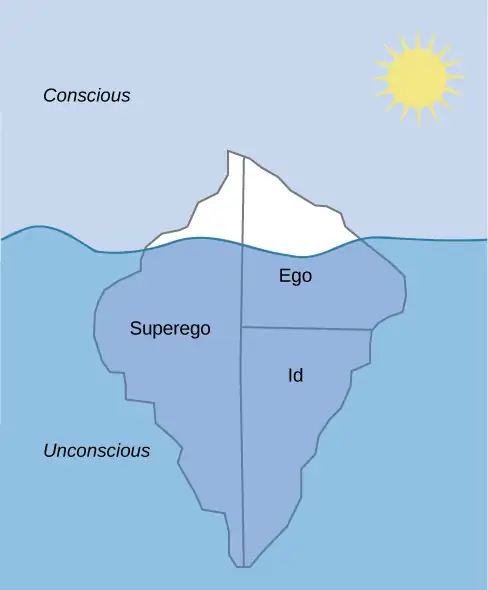
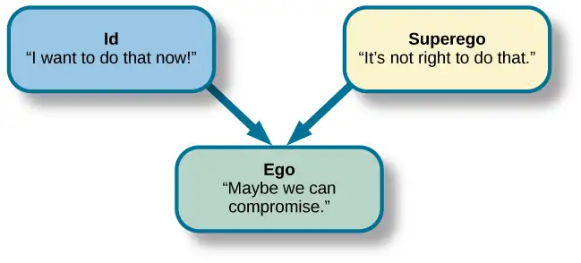
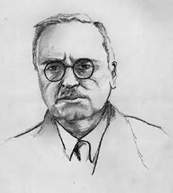
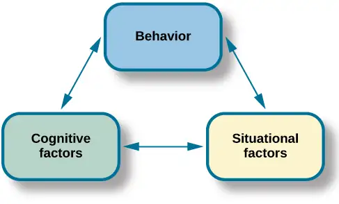
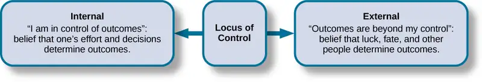
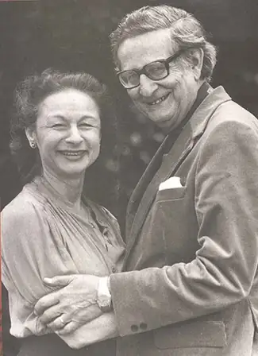
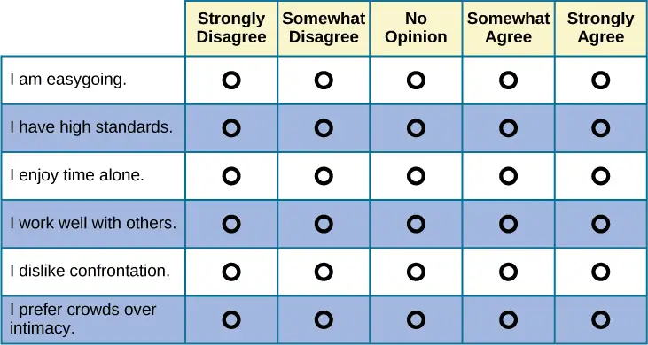
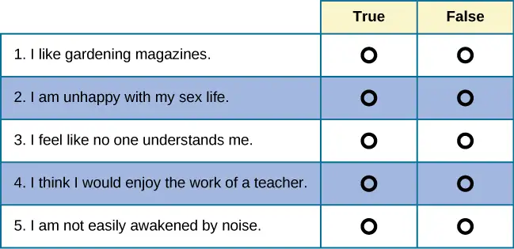
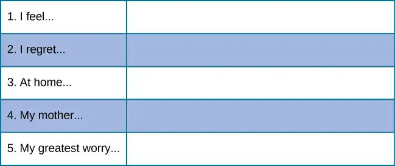

Chapter 11: Personality¶
Introduction¶
Three months before William Jefferson Blythe III was born, his father died in a car accident. He was raised by his mother, Virginia Dell, and grandparents, in Hope, Arkansas. When he turned 4, his mother married Roger Clinton, Jr., an alcoholic who was physically abusive to William’s mother. Six years later, Virginia gave birth to another son, Roger. William, who later took the last name Clinton from his stepfather, became the 42nd president of the United States. While Bill Clinton was making his political ascendance, his half-brother, Roger Clinton, was arrested numerous times for drug charges, including possession, conspiracy to distribute cocaine, and driving under the influence, serving time in jail. Two brothers, raised by the same people, took radically different paths in their lives. Why did they make the choices they did? What internal forces shaped their decisions? Personality psychology can help us answer these questions and more.
11.1 What Is Personality?¶
Learning Objectives
By the end of this section, you will be able to:
- Define personality
- Describe early theories about personality development
Personality refers to the long-standing traits and patterns that propel individuals to consistently think, feel, and behave in specific ways. Our personality is what makes us unique individuals. Each person has an idiosyncratic pattern of enduring, long-term characteristics and a manner in which they interact with other individuals and the world around them. Our personalities are thought to be long term, stable, and not easily changed. The word personality comes from the Latin word persona. In the ancient world, a persona was a mask worn by an actor. While we tend to think of a mask as being worn to conceal one’s identity, the theatrical mask was originally used to either represent or project a specific personality trait of a character (Figure 11.2).
Historical Perspectives¶
The concept of personality has been studied for at least 2,000 years, beginning with Hippocrates in 370 BCE (Fazeli, 2012). Hippocrates theorized that personality traits and human behaviors are based on four separate temperaments associated with four fluids (“humors”) of the body: choleric temperament (yellow bile from the liver), melancholic temperament (black bile from the kidneys), sanguine temperament (red blood from the heart), and phlegmatic temperament (white phlegm from the lungs) (Clark & Watson, 2008; Eysenck & Eysenck, 1985; Lecci & Magnavita, 2013; Noga, 2007). Centuries later, the influential Greek physician and philosopher Galen built on Hippocrates’s theory, suggesting that both diseases and personality differences could be explained by imbalances in the humors and that each person exhibits one of the four temperaments. For example, the choleric person is passionate, ambitious, and bold; the melancholic person is reserved, anxious, and unhappy; the sanguine person is joyful, eager, and optimistic; and the phlegmatic person is calm, reliable, and thoughtful (Clark & Watson, 2008; Stelmack & Stalikas, 1991). Galen’s theory was prevalent for over 1,000 years and continued to be popular through the Middle Ages.
In 1780, Franz Gall, a German physician, proposed that the distances between bumps on the skull reveal a person’s personality traits, character, and mental abilities (Figure 11.3). According to Gall, measuring these distances revealed the sizes of the brain areas underneath, providing information that could be used to determine whether a person was friendly, prideful, murderous, kind, good with languages, and so on. Initially, phrenology was very popular; however, it was soon discredited for lack of empirical support and has long been relegated to the status of pseudoscience (Fancher, 1979).
![Photograph A shows the cover of the American Phrenological Journal circa 1848. Across the top it reads: “American Phrenological Journal.” Below that it says “Know thyself.” Below that is a picture of a human head facing left, with many pictures comprising the area where the brain is. Below the person’s ear it says “Home truths for home consumption.” The lines below that read: “1848,” “Vol. X, March, No. 3,” “O.S. Fowler, Editor,” “Phrenology, Physiology, Physiognomy, Magnetism,” “New York,” “Fowlers and Wells,” “Phrenological cabinet, 131 Nassau-Street,” and “Terms $1 a year, invariably in advance. Ten cts. a Number.” Photograph B shows a printed cartoon of a person in a chair with another person behind. There are three other people in the room, and the wall is decorated with various skulls. Below the picture it reads: “Drawn on Stone by E.H,” and “The Phrenologist.”](img/cnx-psych-11-01-phrenology.webp)
In the centuries after Galen, other researchers contributed to the development of his four primary temperament types, most prominently Immanuel Kant (in the 18th century) and psychologist Wilhelm Wundt (in the 19th century) (Eysenck, 2009; Stelmack & Stalikas, 1991; Wundt, 1874/1886) (Figure 11.4). Kant agreed with Galen that everyone could be sorted into one of the four temperaments and that there was no overlap between the four categories (Eysenck, 2009). He developed a list of traits that could be used to describe the personality of a person from each of the four temperaments. However, Wundt suggested that a better description of personality could be achieved using two major axes: emotional/nonemotional and changeable/unchangeable. The first axis separated strong from weak emotions (the melancholic and choleric temperaments from the phlegmatic and sanguine). The second axis divided the changeable temperaments (choleric and sanguine) from the unchangeable ones (melancholic and phlegmatic) (Eysenck, 2009).
![A circle is divided vertically and horizontally into four sections by lines with arrows at the ends. Clockwise from the top, the arrows are labeled “Strong Emotions,” “Changeable Temperaments,” “Weak Emotions,” and “Unchangeable Temperaments.” The arcs around the perimeter of the circle, clockwise beginning with the top right segment are labeled “Choleric,” “Sanguine,” “Phlegmatic,” and “Melancholic.” The sections inside each arc contain descriptive words. Inside the Choleric arc are the words “excitable, egocentric, exhibitionist, impulsive, histrionic, and active.” Inside the Sanguine arc are the words “playful, easygoing, sociable, carefree, hopeful, and contented.” Inside the Phlegmatic arc are the words “reasonable, principled, controlled, persistent, steadfast, and calm.” Inside the Melancholic arc are the words “anxious, worried, unhappy, suspicious, serious, and thoughtful.”](img/cnx-psych-11-01-fourtemper.webp)
Sigmund Freud’s psychodynamic perspective of personality was the first comprehensive theory of personality, explaining a wide variety of both normal and abnormal behaviors. According to Freud, unconscious drives influenced by sex and aggression, along with childhood sexuality, are the forces that influence our personality. Freud attracted many followers who modified his ideas to create new theories about personality. These theorists, referred to as neo-Freudians, generally agreed with Freud that childhood experiences matter, but they reduced the emphasis on sex and focused more on the social environment and effects of culture on personality. The perspective of personality proposed by Freud and his followers was the dominant theory of personality for the first half of the 20th century.
Other major theories then emerged, including the learning, humanistic, biological, evolutionary, trait, and cultural perspectives. In this chapter, we will explore these various perspectives on personality in depth.
Link to Learning
View this video of an overview of some of the psychological perspectives on personality to learn more.
11.2 Freud and the Psychodynamic Perspective¶
Learning Objectives
By the end of this section, you will be able to:
- Describe the assumptions of the psychodynamic perspective on personality development
- Define and describe the nature and function of the id, ego, and superego
- Define and describe the defense mechanisms
- Define and describe the psychosexual stages of personality development
Sigmund Freud (1856–1939) is probably the most controversial and misunderstood psychological theorist. When reading Freud’s theories, it is important to remember that he was a medical doctor, not a psychologist. There was no such thing as a degree in psychology at the time that he received his education, which can help us understand some of the controversy over his theories today. However, Freud was the first to systematically study and theorize the workings of the unconscious mind in the manner that we associate with modern psychology.
In the early years of his career, Freud worked with Josef Breuer, a Viennese physician. During this time, Freud became intrigued by the story of one of Breuer’s patients, Bertha Pappenheim, who was referred to by the pseudonym Anna O. (Launer, 2005). Anna O. had been caring for her dying father when she began to experience symptoms such as partial paralysis, headaches, blurred vision, amnesia, and hallucinations (Launer, 2005). In Freud’s day, these symptoms were commonly referred to as hysteria. Anna O. turned to Breuer for help. He spent 2 years (1880–1882) treating Anna O. and discovered that allowing her to talk about her experiences seemed to bring some relief of her symptoms. Anna O. called his treatment the “talking cure” (Launer, 2005). Despite the fact that Freud never met Anna O., her story served as the basis for the 1895 book, Studies on Hysteria, which he co-authored with Breuer. Based on Breuer’s description of Anna O.’s treatment, Freud concluded that hysteria was the result of sexual abuse in childhood and that these traumatic experiences had been hidden from consciousness. Breuer disagreed with Freud, which soon ended their work together. However, Freud continued to work to refine talk therapy and build his theory on personality.
Levels of Consciousness¶
To explain the concept of conscious versus unconscious experience, Freud compared the mind to an iceberg (Figure 11.5). He said that only about one-tenth of our mind is conscious, and the rest of our mind is unconscious. Our unconscious refers to that mental activity of which we are unaware and are unable to access (Freud, 1923). According to Freud, unacceptable urges and desires are kept in our unconscious through a process called repression. For example, we sometimes say things that we don’t intend to say by unintentionally substituting another word for the one we meant. You’ve probably heard of a Freudian slip, the term used to describe this. Freud suggested that slips of the tongue are actually sexual or aggressive urges, accidentally slipping out of our unconscious. Speech errors such as this are quite common. Seeing them as a reflection of unconscious desires, linguists today have found that slips of the tongue tend to occur when we are tired, nervous, or not at our optimal level of cognitive functioning (Motley, 2002).

According to Freud, our personality develops from a conflict between two forces: our biological aggressive and pleasure-seeking drives versus our internal (socialized) control over these drives. Our personality is the result of our efforts to balance these two competing forces. Freud suggested that we can understand this by imagining three interacting systems within our minds. He called them the id, ego, and superego (Figure 11.6).

The unconscious id contains our most primitive drives or urges, and is present from birth. It directs impulses for hunger, thirst, and sex. Freud believed that the id operates on what he called the “pleasure principle,” in which the id seeks immediate gratification. Through social interactions with parents and others in a child’s environment, the ego and superego develop to help control the id. The superego develops as a child interacts with others, learning the social rules for right and wrong. The superego acts as our conscience; it is our moral compass that tells us how we should behave. It strives for perfection and judges our behavior, leading to feelings of pride or—when we fall short of the ideal—feelings of guilt. In contrast to the instinctual id and the rule-based superego, the ego is the rational part of our personality. It’s what Freud considered to be the self, and it is the part of our personality that is seen by others. Its job is to balance the demands of the id and superego in the context of reality; thus, it operates on what Freud called the “reality principle.” The ego helps the id satisfy its desires in a realistic way.
The id and superego are in constant conflict, because the id wants instant gratification regardless of the consequences, but the superego tells us that we must behave in socially acceptable ways. Thus, the ego’s job is to find the middle ground. It helps satisfy the id’s desires in a rational way that will not lead us to feelings of guilt. According to Freud, a person who has a strong ego, which can balance the demands of the id and the superego, has a healthy personality. Freud maintained that imbalances in the system can lead to neurosis (a tendency to experience negative emotions), anxiety disorders, or unhealthy behaviors. For example, a person who is dominated by their id might be narcissistic and impulsive. A person with a dominant superego might be controlled by feelings of guilt and deny themselves even socially acceptable pleasures; conversely, if the superego is weak or absent, a person might become a psychopath. An overly dominant superego might be seen in an over-controlled individual whose rational grasp on reality is so strong that they are unaware of their emotional needs, or, in a neurotic who is overly defensive (overusing ego defense mechanisms).
Defense Mechanisms¶
Freud believed that feelings of anxiety result from the ego’s inability to mediate the conflict between the id and superego. When this happens, Freud believed that the ego seeks to restore balance through various protective measures known as defense mechanisms (Figure 11.7). When certain events, feelings, or yearnings cause an individual anxiety, the individual wishes to reduce that anxiety. To do that, the individual’s unconscious mind uses ego defense mechanisms, unconscious protective behaviors that aim to reduce anxiety. The ego, usually conscious, resorts to unconscious strivings to protect the ego from being overwhelmed by anxiety. When we use defense mechanisms, we are unaware that we are using them. Further, they operate in various ways that distort reality. According to Freud, we all use ego defense mechanisms.
![A chart defines eight defense mechanisms and gives an example of each. “Denial” is defined as “Refusing to accept real events because they are unpleasant.” The example given is “Kaila refuses to admit she has an alcohol problem although she is unable to go a single day without drinking excessively.” “Displacement” is defined as “Transferring inappropriate urges or behaviors onto a more acceptable or less threatening target.” The example given is “During lunch at a restaurant, Mark is angry at his older brother, but does not express it and instead is verbally abusive to the server.” “Projection” is defined as “Attributing unacceptable desires to others.” The example given is “Chris often cheats on her boyfriend because she suspects he is already cheating on her.” “Rationalization” is defined as “Justifying behaviors by substituting acceptable reasons for less-acceptable real reasons.” The example given is “Kim failed his history course because he did not study or attend class, but he told his roommates that he failed because the professor didn’t like him.” “Reaction Formation” is defined as “Reducing anxiety by adopting beliefs contrary to your own beliefs.” The example given is “Nadia is angry with her coworker Beth for always arriving late to work after a night of partying, but she is nice and agreeable to Beth and affirms the partying as cool.” “Regression” is defined as “Returning to coping strategies for less mature stages of development.” The example given is “After failing to pass his doctoral examinations, Giorgio spends days in bed cuddling his favorite childhood toy.” “Repression” is defined as “Supressing painful memories and thoughts.” The example given is “LaShea cannot remember her grandfather’s fatal heart attack, although she was present.” “Sublimation” is defined as “Redirecting unacceptable desires through socially acceptable channels.” The example given is “Jerome’s desire for revenge on the drunk driver who killed his son is channeled into a community support group for people who’ve lost loved ones to drunk driving.”](img/cnx-psych-11-02-defense.webp)
While everyone uses defense mechanisms, Freud believed that overuse of them may be problematic. For example, let’s say Joe is a high school football player. Deep down, Joe feels sexually attracted to males. His conscious belief is that being gay is immoral and that if he were gay, his family would disown him and he would be ostracized by his peers. Therefore, there is a conflict between his conscious beliefs (being gay is wrong and will result in being ostracized) and his unconscious urges (attraction to males). The idea that he might be gay causes Joe to have feelings of anxiety. How can he decrease his anxiety? Joe may find himself acting very “macho,” making gay jokes, and picking on a school peer who is gay. This way, Joe’s unconscious impulses are further submerged.
There are several different types of defense mechanisms. For instance, in repression, anxiety-causing memories from consciousness are blocked. As an analogy, let’s say your car is making a strange noise, but because you do not have the money to get it fixed, you just turn up the radio so that you no longer hear the strange noise. Eventually you forget about it. Similarly, in the human psyche, if a memory is too overwhelming to deal with, it might be repressed and thus removed from conscious awareness (Freud, 1920). This repressed memory might cause symptoms in other areas.
Another defense mechanism is reaction formation, in which someone expresses feelings, thoughts, and behaviors opposite to their inclinations. In the above example, Joe made fun of a gay peer while himself being attracted to males. In regression, an individual acts much younger than their age. For example, a four-year-old child who resents the arrival of a newborn sibling may act like a baby and revert to drinking out of a bottle. In projection, a person refuses to acknowledge her own unconscious feelings and instead sees those feelings in someone else. Other defense mechanisms include rationalization, displacement, and sublimation.
Link to Learning
Watch this video of Freud's defense mechanisms to review.
Stages of Psychosexual Development¶
Freud believed that personality develops during early childhood: Childhood experiences shape our personalities as well as our behavior as adults. He asserted that we develop via a series of stages during childhood. Each of us must pass through these childhood stages, and if we do not have the proper nurturing and parenting during a stage, we will be stuck, or fixated, in that stage, even as adults.
In each psychosexual stage of development, the child’s pleasure-seeking urges, coming from the id, are focused on a different area of the body, called an erogenous zone. The stages are oral, anal, phallic, latency, and genital (Table 11.1).
Freud’s psychosexual development theory is quite controversial. To understand the origins of the theory, it is helpful to be familiar with the political, social, and cultural influences of Freud’s day in Vienna at the turn of the 20th century. During this era, a climate of sexual repression, combined with limited understanding and education surrounding human sexuality, heavily influenced Freud’s perspective. Given that sex was a taboo topic, Freud assumed that negative emotional states (neuroses) stemmed from suppression of unconscious sexual and aggressive urges. For Freud, his own recollections and interpretations of patients’ experiences and dreams were sufficient proof that psychosexual stages were universal events in early childhood.
Table 11.1
| Freud’s Stages of Psychosexual Development | ||||
|---|---|---|---|---|
| Stage | Age (years) | Erogenous Zone | Major Conflict | Adult Fixation Example |
| Oral | 0–1 | Mouth | Weaning off breast or bottle | Smoking, overeating |
| Anal | 1–3 | Anus | Toilet training | Neatness, messiness |
| Phallic | 3–6 | Genitals | Oedipus/Electra complex | Vanity, overambition |
| Latency | 6–12 | None | None | None |
| Genital | 12+ | Genitals | None | None |
Oral Stage¶
In the oral stage (birth to 1 year), pleasure is focused on the mouth. Eating and the pleasure derived from sucking (nipples, pacifiers, and thumbs) play a large part in a baby’s first year of life. At around 1 year of age, babies are weaned from the bottle or breast, and this process can create conflict if not handled properly by caregivers. According to Freud, an adult who smokes, drinks, overeats, or bites her nails is fixated in the oral stage of her psychosexual development; she may have been weaned too early or too late, resulting in these fixation tendencies, all of which seek to ease anxiety.
Anal Stage¶
After passing through the oral stage, children enter what Freud termed the anal stage (1–3 years). In this stage, children experience pleasure in their bowel and bladder movements, so it makes sense that the conflict in this stage is over toilet training. During this stage of development, children work to master control of themselves. Freud suggested that success at the anal stage depended on how parents handled toilet training. Parents who offer praise and rewards encourage positive results and can help children feel competent. Parents who are harsh in toilet training can cause a child to become so fearful of soiling that they over-control and become fixated at the anal stage, leading to the development of an anal-retentive personality. The anal-retentive personality is stingy and stubborn, has a compulsive need for order and neatness, and might be considered a perfectionist. If parents are too lenient in toilet training, the child may fail to develop sufficient self-control, become fixated at this stage, and develop an anal-expulsive personality. The anal-expulsive personality is messy, careless, disorganized, and prone to emotional outbursts.
Phallic Stage¶
Freud’s third stage of psychosexual development is the phallic stage (3–6 years), corresponding to the age when children become aware of their bodies and recognize the differences between boys and girls. The erogenous zone in this stage is the genitals. Conflict arises when the child feels a desire for the opposite-sex parent, and jealousy and hatred toward the same-sex parent. For boys, this is called the Oedipus complex, involving a boy's desire for his mother and his urge to replace his father who is seen as a rival for the mother’s attention. The Oedipus complex is named for the Greek myth of Oedipus, who unwittingly kills his biological father and marries his biological mother. According to Freud, the boy is afraid his father will punish him for his feelings, so he experiences castration anxiety. The Oedipus complex is successfully resolved when the boy begins to identify with his father as an indirect way to have the mother. Failure to resolve the Oedipus complex may result in fixation and development of a personality that might be described as vain and overly ambitious.
Freud described penis envy, which he alleged girls experience because they do not have a penis. Girls also experience the Electra complex. The Electra complex, while often attributed to Freud, was actually proposed by Freud’s protégé, Carl Jung (Jung & Kerenyi, 1963). A girl desires the attention of her father and wishes to take her mother’s place. While Freud initially embraced the Electra complex as a parallel to the Oedipus complex, he later rejected it, yet it remains as a cornerstone of Freudian theory, thanks in part to academics in the field (Freud, 1931/1968; Scott, 2005).
Latency Period¶
Following the phallic stage of psychosexual development is a period known as the latency period (6 years to puberty). This period is not considered a stage, because sexual feelings are dormant as children focus on other pursuits, such as school, friendships, hobbies, and sports. Children generally engage in activities with peers of the same sex, which serves to consolidate a child’s gender-role identity.
Genital Stage¶
The final stage is the genital stage (from puberty on). In this stage, there is a sexual reawakening as the incestuous urges resurface. The young person redirects these urges to other, more socially acceptable partners (who often resemble the other-sex parent). People in this stage have mature sexual interests, which for Freud meant a strong desire for the opposite sex. Individuals who successfully completed the previous stages, reaching the genital stage with no fixations, are said to be well-balanced, healthy adults.
While most of Freud’s ideas have not found support in modern research, and several contemporary researchers rejected his premises, we cannot discount the contributions that Freud has made to the field of psychology. It was Freud who pointed out that a large part of our mental life is influenced by the experiences of early childhood and takes place outside of our conscious awareness; his theories paved the way for others.
While Freud's focus on biological drives led him to emphasize the impact of sociocultural factors on personality development, his followers quickly realized that biology alone could not account for the diversity they encountered as the practice of psychoanalysis spread during the time of the Nazi Holocaust. The antisemitism which was prevalent during this period of time may have led mainstream psychoanalysts to focus primarily on the universality of the psychological structures of the mind.
11.3 Neo-Freudians: Adler, Erikson, Jung, and Horney¶
Learning Objectives
By the end of this section, you will be able to:
- Discuss the concept of the inferiority complex
- Discuss the core differences between Erikson’s and Freud’s views on personality
- Discuss Jung’s ideas of the collective unconscious and archetypes
- Discuss the work of Karen Horney, including her revision of Freud’s “penis envy”
Freud attracted many followers who modified his ideas to create new theories about personality. These theorists, referred to as neo-Freudians, generally agreed with Freud that childhood experiences matter, but deemphasized sex, focusing more on the social environment and effects of culture on personality. Four notable neo-Freudians include Alfred Adler, Erik Erikson, Carl Jung (pronounced “Yoong”), and Karen Horney (pronounced “HORN-eye”).
Alfred Adler¶
Alfred Adler, a colleague of Freud’s and the first president of the Vienna Psychoanalytical Society (Freud’s inner circle of colleagues), was the first major theorist to break away from Freud (Figure 11.8). He subsequently founded a school of psychology called individual psychology, which focuses on our drive to compensate for feelings of inferiority. Adler (1937, 1956) proposed the concept of the inferiority complex. An inferiority complex refers to a person’s feelings that they lack worth and don’t measure up to the standards of others or of society. Adler’s ideas about inferiority represent a major difference between his thinking and Freud’s. Freud believed that we are motivated by sexual and aggressive urges, but Adler (1930, 1961) believed that feelings of inferiority in childhood are what drive people to attempt to gain superiority and that this striving is the force behind all of our thoughts, emotions, and behaviors.

Adler also believed in the importance of social connections, seeing childhood development emerging through social development rather than the sexual stages Freud outlined. Adler noted the inter-relatedness of humanity and the need to work together for the betterment of all. He said, “The happiness of mankind lies in working together, in living as if each individual had set himself the task of contributing to the common welfare” (Adler, 1964, p. 255) with the main goal of psychology being “to recognize the equal rights and equality of others” (Adler, 1961, p. 691).
With these ideas, Adler identified three fundamental social tasks that all of us must experience: occupational tasks (careers), societal tasks (friendship), and love tasks (finding an intimate partner for a long-term relationship). Rather than focus on sexual or aggressive motives for behavior as Freud did, Adler focused on social motives. He also emphasized conscious rather than unconscious motivation, since he believed that the three fundamental social tasks are explicitly known and pursued. That is not to say that Adler did not also believe in unconscious processes—he did—but he felt that conscious processes were more important.
One of Adler’s major contributions to personality psychology was the idea that our birth order shapes our personality. He proposed that older siblings, who start out as the focus of their parents’ attention but must share that attention once a new child joins the family, compensate by becoming overachievers. The youngest children, according to Adler, may be spoiled, leaving the middle child with the opportunity to minimize the negative dynamics of the youngest and oldest children. Despite popular attention, research has not conclusively confirmed Adler’s hypotheses about birth order.
Link to Learning
One of Adler’s major contributions to personality psychology was the idea that our birth order shapes our personality. View this summary of birth order theory to learn more.
Erik Erikson¶
As an art school dropout with an uncertain future, young Erik Erikson met Freud’s daughter, Anna Freud, while he was tutoring the children of an American couple undergoing psychoanalysis in Vienna. It was Anna Freud who encouraged Erikson to study psychoanalysis. Erikson received his diploma from the Vienna Psychoanalytic Institute in 1933, and as Nazism spread across Europe, he fled the country and immigrated to the United States that same year. As you learned when you studied lifespan development, Erikson later proposed a psychosocial theory of development, suggesting that an individual’s personality develops throughout the lifespan—a departure from Freud’s view that personality is fixed in early life. In his theory, Erikson emphasized the social relationships that are important at each stage of personality development, in contrast to Freud’s emphasis on sex. Erikson identified eight stages, each of which represents a conflict or developmental task (Table 11.2). The development of a healthy personality and a sense of competence depend on the successful completion of each task.
Table 11.2
| Erikson’s Psychosocial Stages of Development | |||
|---|---|---|---|
| Stage | Age (years) | Developmental Task | Description |
| 1 | 0–1 | Trust vs. mistrust | Trust (or mistrust) that basic needs, such as nourishment and affection, will be met |
| 2 | 1–3 | Autonomy vs. shame/doubt | Sense of independence in many tasks develops |
| 3 | 3–6 | Initiative vs. guilt | Take initiative on some activities, may develop guilt when success not met or boundaries overstepped |
| 4 | 7–11 | Industry vs. inferiority | Develop self-confidence in abilities when competent or sense of inferiority when not |
| 5 | 12–18 | Identity vs. confusion | Experiment with and develop identity and roles |
| 6 | 19–29 | Intimacy vs. isolation | Establish intimacy and relationships with others |
| 7 | 30–64 | Generativity vs. stagnation | Contribute to society and be part of a family |
| 8 | 65– | Integrity vs. despair | Assess and make sense of life and meaning of contributions |
Carl Jung¶
Carl Jung (Figure 11.9) was a Swiss psychiatrist and protégé of Freud, who later split off from Freud and developed his own theory, which he called analytical psychology. The focus of analytical psychology is on working to balance opposing forces of conscious and unconscious thought and experience within one’s personality. According to Jung, this work is a continuous learning process—mainly occurring in the second half of life—of becoming aware of unconscious elements and integrating them into consciousness.
Jung’s split from Freud was based on two major disagreements. First, Jung, like Adler and Erikson, did not accept that sexual drive was the primary motivator in a person’s mental life. Second, although Jung agreed with Freud’s concept of a personal unconscious, he thought it to be incomplete. In addition to the personal unconscious, Jung focused on the collective unconscious.
The collective unconscious is a universal version of the personal unconscious, holding mental patterns, or memory traces, which are common to all of us (Jung, 1928). These ancestral memories, which Jung called archetypes, are represented by universal themes in various cultures, as expressed through literature, art, and dreams (Jung). Jung said that these themes reflect common experiences of people the world over, such as facing death, becoming independent, and striving for mastery. Jung (1964) believed that through biology, each person is handed down the same themes and that the same types of symbols—such as the hero, the maiden, the sage, and the trickster—are present in the folklore and fairy tales of every culture. In Jung’s view, the task of integrating these unconscious archetypal aspects of the self is part of the self-realization process in the second half of life. With this orientation toward self-realization, Jung parted ways with Freud’s belief that personality is determined solely by past events and anticipated the humanistic movement with its emphasis on self-actualization and orientation toward the future.
Jung also proposed two attitudes or approaches toward life: extroversion and introversion (Jung, 1923) (Table 11.3). These ideas are considered Jung’s most important contributions to the field of personality psychology, as almost all models of personality now include these concepts. If you are an extrovert, then you are a person who is energized by being outgoing and socially oriented: You derive your energy from being around others. If you are an introvert, then you are a person who may be quiet and reserved, or you may be social, but your energy is derived from your inner psychic activity. Jung believed a balance between extroversion and introversion best served the goal of self-realization.
Table 11.3
| Introverts and Extroverts | |
|---|---|
| Introvert | Extrovert |
| Energized by being alone | Energized by being with others |
| Avoids attention | Seeks attention |
| Speaks slowly and softly | Speaks quickly and loudly |
| Thinks before speaking | Thinks out loud |
| Stays on one topic | Jumps from topic to topic |
| Prefers written communication | Prefers verbal communication |
| Pays attention easily | Distractible |
| Cautious | Acts first, thinks later |
Another concept proposed by Jung was the persona, which he referred to as a mask that we adopt. According to Jung, we consciously create this persona; however, it is derived from both our conscious experiences and our collective unconscious. What is the purpose of the persona? Jung believed that it is a compromise between who we really are (our true self) and what society expects us to be. We hide those parts of ourselves that are not aligned with society’s expectations.
Link to Learning
Jung’s view of extroverted and introverted types serves as a basis of the Myers-Briggs Type Indicator (MBTI). This questionnaire describes a person’s degree of introversion versus extroversion, thinking versus feeling, intuition versus sensation, and judging versus perceiving. Take this modified questionnaire based on the MBTI to learn more.
Connect the Concepts: Are Archetypes Genetically Based?
Jung proposed that human responses to archetypes are similar to instinctual responses in animals. One criticism of Jung is that there is no evidence that archetypes are biologically based or similar to animal instincts (Roesler, 2012). Jung formulated his ideas about 100 years ago, and great advances have been made in the field of genetics since that time. We’ve found that human babies are born with certain capacities, including the ability to acquire language. However, we’ve also found that symbolic information (such as archetypes) is not encoded on the genome and that babies cannot decode symbolism, refuting the idea of a biological basis to archetypes. Rather than being seen as purely biological, more recent research suggests that archetypes emerge directly from our experiences and are reflections of linguistic or cultural characteristics (Young-Eisendrath, 1995). Today, most Jungian scholars believe that the collective unconscious and archetypes are based on both innate and environmental influences, with the differences being in the role and degree of each (Sotirova-Kohli et al., 2013).
Karen Horney¶
Karen Horney was one of the first women trained as a Freudian psychoanalyst. During the Great Depression, Horney moved from Germany to the United States, and subsequently moved away from Freud’s teachings. Like Jung, Horney believed that each individual has the potential for self-realization and that the goal of psychoanalysis should be moving toward a healthy self rather than exploring early childhood patterns of dysfunction. Horney also disagreed with the Freudian idea that girls have penis envy and are jealous of male biological features. According to Horney, any jealousy is most likely culturally based, due to the greater privileges that men often have, meaning that the differences between men’s and women’s personalities are culturally based, not biologically based. She further suggested that men have womb envy, because they cannot give birth.
Horney’s theories focused on the role of unconscious anxiety. She suggested that normal growth can be blocked by basic anxiety stemming from needs not being met, such as childhood experiences of loneliness and/or isolation. How do children learn to handle this anxiety? Horney suggested three styles of coping (Table 11.4). The first coping style, moving toward people, relies on affiliation and dependence. These children become dependent on their parents and other caregivers in an effort to receive attention and affection, which provides relief from anxiety (Burger, 2008). When these children grow up, they tend to use this same coping strategy to deal with relationships, expressing an intense need for love and acceptance (Burger, 2008). The second coping style, moving against people, relies on aggression and assertiveness. Children with this coping style find that fighting is the best way to deal with an unhappy home situation, and they deal with their feelings of insecurity by bullying other children (Burger, 2008). As adults, people with this coping style tend to lash out with hurtful comments and exploit others (Burger, 2008). The third coping style, moving away from people, centers on detachment and isolation. These children handle their anxiety by withdrawing from the world. They need privacy and tend to be self-sufficient. When these children are adults, they continue to avoid such things as love and friendship, and they also tend to gravitate toward careers that require little interaction with others (Burger, 2008).
Table 11.4
| Horney’s Coping Styles | ||
|---|---|---|
| Coping Style | Description | Example |
| Moving toward people | Affiliation and dependence | Child seeking positive attention and affection from parent; adult needing love |
| Moving against people | Aggression and manipulation | Child fighting or bullying other children; adult who is abrasive and verbally hurtful, or who exploits others |
| Moving away from people | Detachment and isolation | Child withdrawn from the world and isolated; adult loner |
Horney believed these three styles are ways in which people typically cope with day-to-day problems; however, the three coping styles can become neurotic strategies if they are used rigidly and compulsively, leading a person to become alienated from others.
11.4 Learning Approaches¶
Learning Objectives
By the end of this section, you will be able to:
- Describe the behaviorist perspective on personality
- Describe the cognitive perspective on personality
- Describe the social cognitive perspective on personality
In contrast to the psychodynamic approaches of Freud and the neo-Freudians, which relate personality to inner (and hidden) processes, the learning approaches focus only on observable behavior. This illustrates one significant advantage of the learning approaches over psychodynamics: Because learning approaches involve observable, measurable phenomena, they can be scientifically tested.
The Behavioral Perspective¶
Behaviorists do not believe in biological determinism: They do not see personality traits as inborn. Instead, they view personality as significantly shaped by the reinforcements and consequences outside of the organism. In other words, people behave in a consistent manner based on prior learning. B. F. Skinner, a strict behaviorist, believed that environment was solely responsible for all behavior, including the enduring, consistent behavior patterns studied by personality theorists.
As you may recall from your study on the psychology of learning, Skinner proposed that we demonstrate consistent behavior patterns because we have developed certain response tendencies (Skinner, 1953). In other words, we learn to behave in particular ways. We increase the behaviors that lead to positive consequences, and we decrease the behaviors that lead to negative consequences. Skinner disagreed with Freud’s idea that personality is fixed in childhood. He argued that personality develops over our entire life, not only in the first few years. Our responses can change as we come across new situations; therefore, we can expect more variability over time in personality than Freud would anticipate. For example, consider a young woman, Greta, a risk taker. She drives fast and participates in dangerous sports such as hang gliding and kiteboarding. But after she gets married and has children, the system of reinforcements and punishments in her environment changes. Speeding and extreme sports are no longer reinforced, so she no longer engages in those behaviors. In fact, Greta now describes herself as a cautious person.
The Social-Cognitive Perspective¶
Albert Bandura agreed with Skinner that personality develops through learning. He disagreed, however, with Skinner’s strict behaviorist approach to personality development, because he felt that thinking and reasoning are important components of learning. He presented a social-cognitive theory of personality that emphasizes both learning and cognition as sources of individual differences in personality. In social-cognitive theory, the concepts of reciprocal determinism, observational learning, and self-efficacy all play a part in personality development.
Reciprocal Determinism¶
In contrast to Skinner’s idea that the environment alone determines behavior, Bandura (1990) proposed the concept of reciprocal determinism, in which cognitive processes, behavior, and context all interact, each factor influencing and being influenced by the others simultaneously (Figure 11.10). Cognitive processes refer to all characteristics previously learned, including beliefs, expectations, and personality characteristics. Behavior refers to anything that we do that may be rewarded or punished. Finally, the context in which the behavior occurs refers to the environment or situation, which includes rewarding/punishing stimuli.

Consider, for example, that you’re at a festival and one of the attractions is bungee jumping from a bridge. Do you do it? In this example, the behavior is bungee jumping. Cognitive factors that might influence this behavior include your beliefs and values, and your past experiences with similar behaviors. Finally, context refers to the reward structure for the behavior. According to reciprocal determinism, all of these factors are in play.
Observational Learning¶
Bandura’s key contribution to learning theory was the idea that much learning is vicarious. We learn by observing someone else’s behavior and its consequences, which Bandura called observational learning. He felt that this type of learning also plays a part in the development of our personality. Just as we learn individual behaviors, we learn new behavior patterns when we see them performed by other people or models. Drawing on the behaviorists’ ideas about reinforcement, Bandura suggested that whether we choose to imitate a model’s behavior depends on whether we see the model reinforced or punished. Through observational learning, we come to learn what behaviors are acceptable and rewarded in our culture, and we also learn to inhibit deviant or socially unacceptable behaviors by seeing what behaviors are punished.
We can see the principles of reciprocal determinism at work in observational learning. For example, personal factors determine which behaviors in the environment a person chooses to imitate, and those environmental events in turn are processed cognitively according to other personal factors. One person may experience receiving attention as reinforcing, and that person may be more inclined to imitate behaviors such as boasting when a model has been reinforced. For others, boasting may be viewed negatively, despite the attention that might result—or receiving heightened attention may be perceived as being scrutinized. In either case, the person may be less likely to imitate those behaviors even though the reasons for not doing so would be different.
Self-Efficacy¶
Bandura (1977, 1995) has studied a number of cognitive and personal factors that affect learning and personality development, and most recently has focused on the concept of self-efficacy. Self-efficacy is our level of confidence in our own abilities, developed through our social experiences. Self-efficacy affects how we approach challenges and reach goals. In observational learning, self-efficacy is a cognitive factor that affects which behaviors we choose to imitate as well as our success in performing those behaviors.
People who have high self-efficacy believe that their goals are within reach, have a positive view of challenges seeing them as tasks to be mastered, develop a deep interest in and strong commitment to the activities in which they are involved, and quickly recover from setbacks. Conversely, people with low self-efficacy avoid challenging tasks because they doubt their ability to be successful, tend to focus on failure and negative outcomes, and lose confidence in their abilities if they experience setbacks. Feelings of self-efficacy can be specific to certain situations. For instance, a student might feel confident in her ability in English class but much less so in math class.
Julian Rotter and Locus of Control¶
Julian Rotter (1966) proposed the concept of locus of control, another cognitive factor that affects learning and personality development. Distinct from self-efficacy, which involves our belief in our own abilities, locus of control refers to our beliefs about the power we have over our lives. In Rotter’s view, people possess either an internal or an external locus of control (Figure 11.11). Those of us with an internal locus of control (“internals”) tend to believe that most of our outcomes are the direct result of our efforts. Those of us with an external locus of control (“externals”) tend to believe that our outcomes are outside of our control. Externals see their lives as being controlled by other people, luck, or chance. For example, say you didn’t spend much time studying for your psychology test and went out to dinner with friends instead. When you receive your test score, you see that you earned a D. If you possess an internal locus of control, you would most likely admit that you got a D because you didn’t spend enough time studying and decide to study more for the next test. On the other hand, if you possess an external locus of control, you might conclude that the test was too hard and not bother studying for the next test, because you figure you will get a bad grade anyway. Researchers have found that people with an internal locus of control perform better academically, achieve more in their careers, are more independent, are healthier, are better able to cope, and are less depressed than people who have an external locus of control (Benassi, Sweeney, & Durfour, 1988; Lefcourt, 1982; Maltby, Day, & Macaskill, 2007; Whyte, 1977, 1978, 1980).

Link to Learning
Visit this web page describing Locus of Control to learn more.
Walter Mischel and the Person-Situation Debate¶
Walter Mischel was a student of Julian Rotter and taught for years at Stanford, where he was a colleague of Albert Bandura. Mischel surveyed several decades of empirical psychological literature regarding trait prediction of behavior, and his conclusion shook the foundations of personality psychology. Mischel found that the data did not support the central principle of the field—that a person’s personality traits are consistent across situations. His report triggered a decades-long period of self-examination, known as the person-situation debate, among personality psychologists.
Mischel suggested that perhaps we were looking for consistency in the wrong places. He found that although behavior was inconsistent across different situations, it was much more consistent within situations—so that a person’s behavior in one situation would likely be repeated in a similar one. And as you will see next regarding his famous “marshmallow test,” Mischel also found that behavior is consistent in equivalent situations across time.
One of Mischel’s most notable contributions to personality psychology was his ideas on self-regulation. According to Lecci & Magnavita (2013), “Self-regulation is the process of identifying a goal or set of goals and, in pursuing these goals, using both internal (e.g., thoughts and affect) and external (e.g., responses of anything or anyone in the environment) feedback to maximize goal attainment” (p. 6.3). Self-regulation is also known as will power. When we talk about will power, we tend to think of it as the ability to delay gratification. For example, Bettina’s teenage son made strawberry cupcakes, and they looked delicious. However, Bettina forfeited the pleasure of eating one, because she is training for a 5K race and wants to be fit and do well in the race. Would you be able to resist getting a small reward now in order to get a larger reward later? This is the question Mischel investigated in his now-classic marshmallow test.
Mischel designed a study to assess self-regulation in young children. In the marshmallow study, Mischel and his colleagues placed a preschool child in a room with one marshmallow on the table. The children were told they could either eat the marshmallow now, or wait until the researcher returned to the room, and then they could have two marshmallows (Mischel, Ebbesen & Raskoff, 1972). This was repeated with hundreds of preschoolers. What Mischel and his team found was that young children differ in their degree of self-control. Mischel and his colleagues continued to follow this group of preschoolers through high school, and what do you think they discovered? The children who had more self-control in preschool (the ones who waited for the bigger reward) were more successful in high school. They had higher SAT scores, had positive peer relationships, and were less likely to have substance abuse issues; as adults, they also had more stable marriages (Mischel, Shoda, & Rodriguez, 1989; Mischel et al., 2010). On the other hand, those children who had poor self-control in preschool (the ones who grabbed the one marshmallow) were not as successful in high school, and they were found to have academic and behavioral problems. A more recent study using a larger and more representative sample found associations between early delay of gratification (Watts, Duncan, & Quan, 2018) and measures of achievement in adolescence. However, researchers also found that the associations were not as strong as those reported during Mischel's initial experiment and were quite sensitive to situational factors such as early measures of cognitive capacity, family background, and home environment. This research suggests that consideration of situational factors is important to better understand behavior.
Link to Learning
Watch Joachim de Posada's TEDTalk about the marshmallow test to learn more and to see the test given to children in Colombia.
Today, the debate is mostly resolved, and most psychologists consider both the situation and personal factors in understanding behavior. For Mischel (1993), people are situation processors. The children in the marshmallow test each processed, or interpreted, the rewards structure of that situation in their own way. Mischel’s approach to personality stresses the importance of both the situation and the way the person perceives the situation. Instead of behavior being determined by the situation, people use cognitive processes to interpret the situation and then behave in accordance with that interpretation.
11.5 Humanistic Approaches¶
Learning Objectives
By the end of this section, you will be able to:
- Discuss the contributions of Abraham Maslow and Carl Rogers to personality development
As the “third force” in psychology, humanism is touted as a reaction both to the pessimistic determinism of psychoanalysis, with its emphasis on psychological disturbance, and to the behaviorists’ view of humans passively reacting to the environment, which has been criticized as making people out to be personality-less robots. It does not suggest that psychoanalytic, behaviorist, and other points of view are incorrect but argues that these perspectives do not recognize the depth and meaning of human experience, and fail to recognize the innate capacity for self-directed change and transforming personal experiences. This perspective focuses on how healthy people develop. One pioneering humanist, Abraham Maslow, studied people who he considered to be healthy, creative, and productive, including Albert Einstein, Eleanor Roosevelt, Thomas Jefferson, Abraham Lincoln, and others. Maslow (1950, 1970) found that such people share similar characteristics, such as being open, creative, loving, spontaneous, compassionate, concerned for others, and accepting of themselves. When you studied motivation, you learned about one of the best-known humanistic theories, Maslow's hierarchy of needs theory, in which Maslow proposes that human beings have certain needs in common and that these needs must be met in a certain order. The highest need is the need for self-actualization, which is the achievement of our fullest potential. Maslow differentiated between needs that motivate us to fulfill something that is missing and needs that inspire us to grow. He believed that many emotional and behavioral concerns arise as a result of failing to meet these hierarchical needs.
Another humanistic theorist was Carl Rogers. One of Rogers’s main ideas about personality regards self-concept, our thoughts and feelings about ourselves. How would you respond to the question, “Who am I?” Your answer can show how you see yourself. If your response is primarily positive, then you tend to feel good about who you are, and you see the world as a safe and positive place. If your response is mainly negative, then you may feel unhappy with who you are. Rogers further divided the self into two categories: the ideal self and the real self. The ideal self is the person that you would like to be; the real self is the person you actually are. Rogers focused on the idea that we need to achieve consistency between these two selves. We experience congruence when our thoughts about our real self and ideal self are very similar—in other words, when our self-concept is accurate. High congruence leads to a greater sense of self-worth and a healthy, productive life. Parents can help their children achieve this by giving them unconditional positive regard, or unconditional love. According to Rogers (1980), “As persons are accepted and prized, they tend to develop a more caring attitude towards themselves” (p. 116). Conversely, when there is a great discrepancy between our ideal and actual selves, we experience a state Rogers called incongruence, which can lead to maladjustment. Both Rogers’s and Maslow’s theories focus on individual choices and do not believe that biology is deterministic.
11.6 Biological Approaches¶
Learning Objectives
By the end of this section, you will be able to:
- Discuss the findings of the Minnesota Study of Twins Reared Apart as they relate to personality and genetics
- Discuss temperament and describe the three infant temperaments identified by Thomas and Chess
- Discuss the evolutionary perspective on personality development
How much of our personality is in-born and biological, and how much is influenced by the environment and culture we are raised in? Psychologists who favor the biological approach believe that inherited predispositions as well as physiological processes can be used to explain differences in our personalities (Burger, 2008).
Evolutionary psychology relative to personality development looks at personality traits that are universal, as well as differences across individuals. In this view, adaptive differences have evolved and then provide a survival and reproductive advantage. Individual differences are important from an evolutionary viewpoint for several reasons. Certain individual differences, and the heritability of these characteristics, have been well documented. David Buss has identified several theories to explore this relationship between personality traits and evolution, such as life-history theory, which looks at how people expend their time and energy (such as on bodily growth and maintenance, reproduction, or parenting). Another example is costly signaling theory, which examines the honesty and deception in the signals people send one another about their quality as a mate or friend (Buss, 2009).
In the field of behavioral genetics, the Minnesota Study of Twins Reared Apart—a well-known study of the genetic basis for personality—conducted research with twins from 1979 to 1999. In studying 350 pairs of twins, including pairs of identical and fraternal twins reared together and apart, researchers found that identical twins, whether raised together or apart, have very similar personalities (Bouchard, 1994; Bouchard, Lykken, McGue, Segal, & Tellegen, 1990; Segal, 2012). These findings suggest the heritability of some personality traits. Heritability refers to the proportion of difference among people that is attributed to genetics. Some of the traits that the study reported as having more than a 0.50 heritability ratio include leadership, obedience to authority, a sense of well-being, alienation, resistance to stress, and fearfulness. The implication is that some aspects of our personalities are largely controlled by genetics; however, it’s important to point out that traits are not determined by a single gene, but by a combination of many genes, as well as by epigenetic factors that control whether the genes are expressed.
Other research that has examined the link between personality and other factors has identified and studied Type A and Type B personalities, which you will learn more about in the chapter on Stress, Health, and Lifestyle.
Link to Learning
Watch this video about genetic makeup's influence on personality to learn more. Note that while this video references "real parents," the term "biological parents" is preferred.
Temperament¶
Most contemporary psychologists believe temperament has a biological basis due to its appearance very early in our lives (Rothbart, 2011). As you learned when you studied lifespan development, Thomas and Chess (1977) found that babies could be categorized into one of three temperaments: easy, difficult, or slow to warm up. However, environmental factors (family interactions, for example) and maturation can affect the ways in which children’s personalities are expressed (Carter et al., 2008).
Research suggests that there are two dimensions of our temperament that are important parts of our adult personality—reactivity and self-regulation (Rothbart, Ahadi, & Evans, 2000). Reactivity refers to how we respond to new or challenging environmental stimuli; self-regulation refers to our ability to control that response (Rothbart & Derryberry, 1981; Rothbart, Sheese, Rueda, & Posner, 2011). For example, one person may immediately respond to new stimuli with a high level of anxiety, while another barely notices it.
11.7 Trait Theorists¶
Learning Objectives
By the end of this section, you will be able to:
- Discuss early trait theories of Cattell and Eysenck
- Discuss the Big Five factors and describe someone who is high and low on each of the five factors
Trait theorists believe personality can be understood via the approach that all people have certain traits, or characteristic ways of behaving. Do you tend to be sociable or shy? Passive or aggressive? Optimistic or pessimistic? Moody or even-tempered? Early trait theorists tried to describe all human personality traits. For example, one trait theorist, Gordon Allport (Allport & Odbert, 1936), found 4,500 words in the English language that could describe people. He organized these personality traits into three categories: cardinal traits, central traits, and secondary traits. A cardinal trait is one that dominates your entire personality, and hence your life—such as Ebenezer Scrooge’s greed and Mother Theresa’s altruism. Cardinal traits are not very common: Few people have personalities dominated by a single trait. Instead, our personalities typically are composed of multiple traits. Central traits are those that make up our personalities (such as loyal, kind, agreeable, friendly, sneaky, wild, and grouchy). Secondary traits are those that are not quite as obvious or as consistent as central traits. They are present under specific circumstances and include preferences and attitudes. For example, one person gets angry when people try to tickle him; another can only sleep on the left side of the bed; and yet another always orders her salad dressing on the side. And you—although not normally an anxious person—feel nervous before making a speech in front of your English class.
In an effort to make the list of traits more manageable, Raymond Cattell (1946, 1957) narrowed down the list to about 171 traits. However, saying that a trait is either present or absent does not accurately reflect a person’s uniqueness, because all of our personalities are actually made up of the same traits; we differ only in the degree to which each trait is expressed. Cattell (1957) identified 16 factors or dimensions of personality: warmth, reasoning, emotional stability, dominance, liveliness, rule-consciousness, social boldness, sensitivity, vigilance, abstractedness, privateness, apprehension, openness to change, self-reliance, perfectionism, and tension (Table 11.5). He developed a personality assessment based on these 16 factors, called the 16PF. Instead of a trait being present or absent, each dimension is scored over a continuum, from high to low. For example, your level of warmth describes how warm, caring, and nice to others you are. If you score low on this index, you tend to be more distant and cold. A high score on this index signifies you are supportive and comforting.
Table 11.5
| Personality Factors Measured by the 16PF Questionnaire | ||
|---|---|---|
| Factor | Low Score | High Score |
| Warmth | Reserved, detached | Outgoing, supportive |
| Intellect | Concrete thinker | Analytical |
| Emotional stability | Moody, irritable | Stable, calm |
| Aggressiveness | Docile, submissive | Controlling, dominant |
| Liveliness | Somber, prudent | Adventurous, spontaneous |
| Dutifulness | Unreliable | Conscientious |
| Social assertiveness | Shy, restrained | Uninhibited, bold |
| Sensitivity | Tough-minded | Sensitive, caring |
| Paranoia | Trusting | Suspicious |
| Abstractness | Conventional | Imaginative |
| Introversion | Open, straightforward | Private, shrewd |
| Anxiety | Confident | Apprehensive |
| Openmindedness | Closeminded, traditional | Curious, experimental |
| Independence | Outgoing, social | Self-sufficient |
| Perfectionism | Disorganized, casual | Organized, precise |
| Tension | Relaxed | Stressed |
Link to Learning
Take this assessment based on Cattell's 16PF questionnaire to see which personality traits dominate your personality.
Psychologists Hans and Sybil Eysenck were personality theorists (Figure 11.12) who focused on temperament, the inborn, genetically based personality differences that you studied earlier in the chapter. They believed personality is largely governed by biology. The Eysencks (Eysenck, 1990, 1992; Eysenck & Eysenck, 1963) viewed people as having two specific personality dimensions: extroversion/introversion and neuroticism/stability.

According to their theory, people high on the trait of extroversion are sociable and outgoing, and readily connect with others, whereas people high on the trait of introversion have a higher need to be alone, engage in solitary behaviors, and limit their interactions with others. In the neuroticism/stability dimension, people high on neuroticism tend to be anxious; they tend to have an overactive sympathetic nervous system and, even with low stress, their bodies and emotional state tend to go into a flight-or-fight reaction. In contrast, people high on stability tend to need more stimulation to activate their flight-or-fight reaction and are considered more emotionally stable. Based on these two dimensions, the Eysencks’ theory divides people into four quadrants. These quadrants are sometimes compared with the four temperaments described by the Greeks: melancholic, choleric, phlegmatic, and sanguine (Figure 11.13).
![A circle is divided vertically and horizontally into four sections by lines with arrows at the ends. Clockwise from the top, the arrows are labeled “Unstable Emotions (Neurotic),” “Extroverted Personality,” “Stable Emotions,” and “Introverted Personality.” The arcs around the perimeter of the circle, clockwise beginning with the top right segment are labeled “Choleric,” “Sanguine,” “Phlegmatic,” and “Melancholic.” The sections inside each arc contain descriptive words. Inside the Choleric arc are the words “touchy, restless, aggressive, excitable, impulsive, and active.” Inside the Sanguine arc are the words “sociable, talkative, responsive, easygoing, lively, and carefree.” Inside the Phlegmatic arc are the words “passive, thoughtful, peaceful, controlled, reliable, and calm.” Inside the Melancholic arc are the words “moody, anxious, rigid, pessimistic, unsociable, and quiet.”](img/cnx-psych-11-04-quadrants.webp)
Later, the Eysencks added a third dimension: psychoticism versus superego control (Eysenck, Eysenck & Barrett, 1985). In this dimension, people who are high on psychoticism tend to be independent thinkers, cold, nonconformists, impulsive, antisocial, and hostile, whereas people who are high on superego control tend to have high impulse control—they are more altruistic, empathetic, cooperative, and conventional (Eysenck, Eysenck & Barrett, 1985).
While Cattell’s 16 factors may be too broad, the Eysenck’s two-factor system has been criticized for being too narrow. Another personality theory, called the Five Factor Model, effectively hits a middle ground, with its five factors referred to as the Big Five personality factors. It is the most popular theory in personality psychology today and the most accurate approximation of the basic personality dimensions (Funder, 2001). The five factors are openness to experience, conscientiousness, extroversion, agreeableness, and neuroticism (Figure 11.14). A helpful way to remember the factors is by using the mnemonic OCEAN.
In the Five Factor Model, each person has each factor, but they occur along a spectrum. Openness to experience is characterized by imagination, feelings, actions, and ideas. People who score high on this factor tend to be curious and have a wide range of interests. Conscientiousness is characterized by competence, self-discipline, thoughtfulness, and achievement-striving (goal-directed behavior). People who score high on this factor are hardworking and dependable. Numerous studies have found a positive correlation between conscientiousness and academic success (Akomolafe, 2013; Chamorro-Premuzic & Furnham, 2008; Conrad & Patry, 2012; Noftle & Robins, 2007; Wagerman & Funder, 2007). Extroversion is characterized by sociability, assertiveness, excitement-seeking, and emotional expression. People who score high on this factor are usually described as outgoing and warm. Not surprisingly, people who score high on both extroversion and openness are more likely to participate in adventure and risky sports due to their curious and excitement-seeking nature (Tok, 2011). The fourth factor is agreeableness, which is the tendency to be pleasant, cooperative, trustworthy, and good-natured. People who score low on agreeableness tend to be described as rude and uncooperative, yet one recent study reported that men who scored low on this factor actually earned more money than men who were considered more agreeable (Judge, Livingston, & Hurst, 2012). The last of the Big Five factors is neuroticism, which is the tendency to experience negative emotions. People high on neuroticism tend to experience emotional instability and are characterized as angry, impulsive, and hostile. Watson and Clark (1984) found that people reporting high levels of neuroticism also tend to report feeling anxious and unhappy. In contrast, people who score low in neuroticism tend to be calm and even-tempered.
![A diagram includes five vertically stacked arrows, which point to the left and right. A dimension's first letter, name, and description are included inside of each arrow. A box to the left of each arrow includes factors associated with a low score for that arrow's dimension. A box to the right of each arrow includes factors associated with a high score for that arrow's dimension. The top arrow includes the factor “openness,” which is described with the words, “imagination,” “feelings,” “actions,” and “ideas.” The box to the left of that arrow includes the words, “practical,” “conventional,” and “prefers routine,” while the box to the right of that arrow includes the words, “curious,” “wide range of interests,” and “independent.” The next arrow includes the factor “conscientiousness,” which is described with the words, “competence,” “self-discipline,” “thoughtfulness,” and “goal-driven.” The box to the left of that arrow includes the words, “impulsive,” “careless,” and “disorganized,” while the box to the right of that arrow includes the words, “hardworking,” “dependable,” and “organized.” The next arrow includes the factor “extroversion,” which is described with the words, “sociability,” “assertiveness,” and “emotional expression.” The box to the left of that arrow includes the words, “quiet,” “reserved,” and “withdrawn,” while the box to the right of that arrow includes the words, “outgoing,” “warm,” and “seeks adventure.” The next arrow includes the factor “agreeableness,” which is described with the words, “cooperative,” “trustworthy,” and “good-natured.” The box to the left of that arrow includes the words, “critical,” “uncooperative,” and “suspicious,” while the box to the right of that arrow includes the words, “helpful,” “trusting,” and “empathetic.” The next arrow includes the factor “neuroticism,” which is described as “tendency toward unstable emotions.” The box to the left of that arrow includes the words, “calm,” “even-tempered,” and “secure,” while the box to the right of that arrow includes the words, “anxious,” “unhappy,” and “prone to negative emotions.”](img/cnx-psych-11-07-bigfive.webp)
The Big Five personality factors each represent a range between two extremes. In reality, most of us tend to lie somewhere midway along the continuum of each factor, rather than at polar ends. It’s important to note that the Big Five factors are relatively stable over our lifespan, with some tendency for the factors to increase or decrease slightly. Researchers have found that conscientiousness increases through young adulthood into middle age, as we become better able to manage our personal relationships and careers (Donnellan & Lucas, 2008). Agreeableness also increases with age, peaking between 50 to 70 years (Terracciano, McCrae, Brant, & Costa, 2005). Neuroticism and extroversion tend to decline slightly with age (Donnellan & Lucas; Terracciano et al.). Additionally, The Big Five factors have been shown to exist across ethnicities, cultures, and ages, and may have substantial biological and genetic components (Jang, Livesley, & Vernon, 1996; Jang et al., 2006; McCrae & Costa, 1997; Schmitt et al., 2007).
Another model of personality traits is the HEXACO model. HEXACO is an acronym for six broad traits: honesty-humility, emotionality, extraversion, agreeableness, conscientiousness, and openness to experience (Anglim & O’Connor, 2018). Table 11.6 provides a brief overview of each trait.
Table 11.6
| The HEXACO Traits | |
|---|---|
| Trait | Example Aspects of Trait |
| (H) Honesty-humility | Sincerity, modesty, faithfulness |
| (E) Emotionality | Sentimentality, anxiety, sensitivity |
| (X) Extraversion | Sociability, talkativeness, boldness |
| (A) Agreeableness | Patience, tolerance, gentleness |
| (C) Conscientiousness | Organization, thoroughness, precision |
| (O) Openness | Creativity, inquisitiveness, innovativeness |
Link to Learning
Take the Big Five Personality test to find out about your personality and where you fall on the Big Five factors.
11.8 Cultural Understandings of Personality¶
Learning Objectives
By the end of this section you should be able to:
- Discuss personality differences of people from collectivist and individualist cultures
- Discuss the three approaches to studying personality in a cultural context
As you have learned in this chapter, personality is shaped by both genetic and environmental factors. The culture in which you live is one of the most important environmental factors that shapes your personality (Triandis & Suh, 2002). The term culture refers to all of the beliefs, customs, art, and traditions of a particular society. Culture is transmitted to people through language as well as through the modeling of culturally acceptable and nonacceptable behaviors that are either rewarded or punished (Triandis & Suh, 2002). With these ideas in mind, personality psychologists have become interested in the role of culture in understanding personality. They ask whether personality traits are the same across cultures or if there are variations. It appears that there are both universal and culture-specific aspects that account for variation in people’s personalities.
Why might it be important to consider cultural influences on personality? Western ideas about personality may not be applicable to other cultures (Benet-Martinez & Oishi, 2008). In fact, there is evidence that the strength of personality traits varies across cultures. Let’s take a look at some of the Big Five factors (conscientiousness, neuroticism, openness, and extroversion) across cultures. As you will learn when you study social psychology, Asian cultures are more collectivist, and people in these cultures tend to be less extroverted. People in Central and South American cultures tend to score higher on openness to experience, whereas Europeans score higher on neuroticism (Benet-Martinez & Karakitapoglu-Aygun, 2003).
According to a study by Rentfrow and colleagues, there also seem to be regional personality differences within the United States (Figure 11.15). Researchers analyzed responses from over 1.5 million individuals in the United States and found that there are three distinct regional personality clusters: Cluster 1, which is in the Upper Midwest and Deep South, is dominated by people who fall into the “friendly and conventional” personality; Cluster 2, which includes the West, is dominated by people who are more relaxed, emotionally stable, calm, and creative; and Cluster 3, which includes the Northeast, has more people who are stressed, irritable, and depressed. People who live in Clusters 2 and 3 are also generally more open (Rentfrow et al., 2013).
![A map of the United States is shown. Above it is the label “Personality Clusters in the Continental United States.” Below it is a legend which defines areas in the map as either, “Cluster 1: friendly, conventional;” “Cluster 2: relaxed, creative;” or “Cluster 3: temperamental, uninhibited.” Cluster 1occurs mainly in the center of the country. Cluster 2 occurs mainly on the west side of the country. Cluster 3 occurs mainly in the North-East region of the country and also in Texas. These are generalizations; there are several states which are comprised of a combination of two different clusters.](img/cnx-psych-11-08-clusters.webp)
One explanation for the regional differences is selective migration (Rentfrow et al., 2013). Selective migration is the concept that people choose to move to places that are compatible with their personalities and needs. For example, a person high on the agreeable scale would likely want to live near family and friends, and would choose to settle or remain in such an area. In contrast, someone high on openness would prefer to settle in a place that is recognized as diverse and innovative (such as California). Further, Rentfrow, Jost, Gosling, & Potter (2009) noted an overlap between geographical regions and personality characteristics that goes beyond the often-used explanations of religion, racial diversity, and education. Their research suggests that the psychological profile of a region is closely related to that of its residents. They found that levels of openness and conscientiousness in a state may predict voting patterns, indicating that there are correlations between geographic regions and personality differences between liberals and conservatives relating to political views, levels of economic vitality, and entrepreneurial rates.
Personality in Individualist and Collectivist Cultures¶
Individualist cultures and collectivist cultures place emphasis on different basic values. People who live in individualist cultures tend to believe that independence, competition, and personal achievement are important. Individuals in Western nations such as the United States, England, and Australia score high on individualism (Oyserman, Coon, & Kemmelmier, 2002). People who live in collectivist cultures value social harmony, respectfulness, and group needs over individual needs. Individuals who live in countries in Asia, Africa, and South America score high on collectivism (Hofstede, 2001; Triandis, 1995). These values influence personality. For example, Yang (2006) found that people in individualist cultures displayed more personally oriented personality traits, whereas people in collectivist cultures displayed more socially oriented personality traits. Frewer and Bleus (1991) conducted a study of the Eysenck Personality Inventory in a collectivist culture using Papua New Guinean university students. They found that the results of the personality inventory were only relevant when analyzed within the context of a collectivist society. Similarly, Dana (1986) suggested that personality assessment services for Native Americans are often provided without a proper recognition of culture-specific responses and a tribe-specific frame of reference. Assessors need to have more than a general knowledge of history, tribal differences, contemporary culture on reservations, and levels of acculturation in order to interpret psychological test responses with a minimal bias.
Approaches to Studying Personality in a Cultural Context¶
There are three approaches that can be used to study personality in a cultural context, the cultural-comparative approach; the indigenous approach; and the combined approach, which incorporates elements of both views. Since ideas about personality have a Western basis, the cultural-comparative approach seeks to test Western ideas about personality in other cultures to determine whether they can be generalized and if they have cultural validity (Cheung van de Vijver, & Leong, 2011). For example, recall from the previous section on the trait perspective that researchers used the cultural-comparative approach to test the universality of McCrae and Costa’s Five Factor Model. They found applicability in numerous cultures around the world, with the Big Five factors being stable in many cultures (McCrae & Costa, 1997; McCrae et al., 2005). The indigenous approach came about in reaction to the dominance of Western approaches to the study of personality in non-Western settings (Cheung et al., 2011). Because Western-based personality assessments cannot fully capture the personality constructs of other cultures, the indigenous model has led to the development of personality assessment instruments that are based on constructs relevant to the culture being studied (Cheung et al., 2011). The third approach to cross-cultural studies of personality is the combined approach, which serves as a bridge between Western and indigenous psychology as a way of understanding both universal and cultural variations in personality (Cheung et al., 2011).
11.9 Personality Assessment¶
Learning Objectives
By the end of this section, you will be able to:
- Discuss the Minnesota Multiphasic Personality Inventory
- Recognize and describe common projective tests used in personality assessment
Roberto, Mikhail, and Nat are college friends and all want to be police officers. Roberto is quiet and shy, lacks self-confidence, and usually follows others. He is a kind person, but lacks motivation. Mikhail is loud and boisterous, a leader. He works hard, but is impulsive and drinks too much on the weekends. Nat is thoughtful and well liked. They are trustworthy, but very methodical and therefore have difficulty making quick decisions. Of these three, who would make the best police officer? What qualities and personality factors make someone a good police officer? What makes someone a bad or dangerous police officer?
A police officer’s job is very high in stress, and law enforcement agencies want to make sure they hire the right people. Personality testing is often used for this purpose—to screen applicants for employment and job training. Personality tests are also used in criminal cases and custody battles, and to assess psychological disorders. This section explores the best known among the many different types of personality tests.
Self-Report Inventories¶
Self-report inventories are a kind of objective test used to assess personality. They typically use multiple-choice items or numbered scales, which represent a range from 1 (strongly disagree) to 5 (strongly agree). They are often called Likert scales after their developer, Rensis Likert (1932) (Figure 11.16). Self-report inventories are generally easy to administer and cost effective. There is also an increased likelihood of test takers being inclined to answer in ways that are intentionally or unintentionally more socially desirable, exaggerated, biased, or misleading. For example, someone applying for a job will likely try to present themselves in a positive light, perhaps as an even better candidate than they actually are.

One of the most widely used personality inventories is the Minnesota Multiphasic Personality Inventory (MMPI), first published in 1943, with 504 true/false questions, and updated to the MMPI-2 in 1989, with 567 questions. The original MMPI was based on a small, limited sample, composed mostly of Minnesota farmers and psychiatric patients; the revised inventory was based on a more representative, national sample to allow for better standardization. The MMPI-2 takes 1–2 hours to complete. Responses are scored to produce a clinical profile composed of 10 scales: hypochondriasis, depression, hysteria, psychopathic deviance (social deviance), masculinity versus femininity, paranoia, psychasthenia (obsessive/compulsive qualities), schizophrenia, hypomania, and social introversion. There is also a scale to ascertain risk factors for alcohol abuse. In 2008, the test was again revised, using more advanced methods, to the MMPI-2-RF. This version takes about one-half the time to complete and has only 338 questions (Figure 11.17). Despite the new test’s advantages, the MMPI-2 is more established and is still more widely used. Typically, the tests are administered by computer. Although the MMPI was originally developed to assist in the clinical diagnosis of psychological disorders, it is now also used for occupational screening, such as in law enforcement, and in college, career, and marital counseling (Ben-Porath & Tellegen, 2008).

In addition to clinical scales, the tests also have validity and reliability scales. (Recall the concepts of reliability and validity from your study of psychological research.) One of the validity scales, the Lie Scale (or “L” Scale), consists of 15 items and is used to ascertain whether the respondent is “faking good” (underreporting psychological problems to appear healthier). For example, if someone responds “yes” to a number of unrealistically positive items such as “I have never told a lie,” they may be trying to “fake good” or appear better than they actually are.
Reliability scales test an instrument’s consistency over time, assuring that if you take the MMPI-2-RF today and then again 5 years later, your two scores will be similar. Beutler, Nussbaum, and Meredith (1988) gave the MMPI to newly recruited police officers and then to the same police officers 2 years later. After 2 years on the job, police officers’ responses indicated an increased vulnerability to alcoholism, somatic symptoms (vague, unexplained physical complaints), and anxiety. When the test was given an additional 2 years later (4 years after starting on the job), the results suggested high risk for alcohol-related difficulties.
Projective Tests¶
Another method for assessment of personality is projective testing. This kind of test relies on one of the defense mechanisms proposed by Freud—projection—as a way to assess unconscious processes. During this type of testing, a series of ambiguous cards is shown to the person being tested, who then is encouraged to project their feelings, impulses, and desires onto the cards—by telling a story, interpreting an image, or completing a sentence. Many projective tests have undergone standardization procedures (for example, Exner, 2002) and can be used to assess whether someone has unusual thoughts or a high level of anxiety, or is likely to become volatile. Some examples of projective tests are the Rorschach Inkblot Test, the Thematic Apperception Test (TAT), the Contemporized-Themes Concerning Blacks test, the TEMAS (Tell-Me-A-Story), and the Rotter Incomplete Sentence Blank (RISB). Projective tests are less subject to intentional distortion; it is hard to fake “good" because it is not obvious what a "good” answer is. Projective tests are more time consuming for the evaluator than self-report inventories. If an evaluator scores the Rorschach using the Exner scoring system, the test is considered a valid and reliable measure. However, the validity of the other projective tests is questionable, and the results are often not usable for court cases (Goldstein, n.d.).
The Rorschach Inkblot Test was developed in 1921 by a Swiss psychologist named Hermann Rorschach (pronounced “ROAR-shock”). It is a series of symmetrical inkblot cards that are presented to a client by a psychologist. Upon presentation of each card, the psychologist asks the client, “What might this be?” What the test-taker sees reveals unconscious feelings and struggles (Piotrowski, 1987; Weiner, 2003). The Rorschach has been standardized using the Exner system and is effective in measuring depression, psychosis, and anxiety.
A second projective test is the Thematic Apperception Test (TAT), created in the 1930s by Henry Murray, an American psychologist, and a psychoanalyst named Christiana Morgan. A person taking the TAT is shown 8–12 ambiguous pictures and is asked to tell a story about each picture (Figure 11.18). The stories give insight into their social world, revealing hopes, fears, interests, and goals. The storytelling format helps to lower a person’s resistance divulging unconscious personal details (Cramer, 2004). The TAT has been used in clinical settings to evaluate psychological difficulties. Standardization of test administration is virtually nonexistent among clinicians, and the test tends to be modest to low on validity and reliability (Aronow, Weiss, & Rezinkoff, 2001; Lilienfeld, Wood, & Garb, 2000). Despite these shortcomings, the TAT has been one of the most widely used projective tests.
A third projective test is the Rotter Incomplete Sentence Blank (RISB) developed by Julian Rotter in 1950 (recall his theory of locus of control, covered earlier in this chapter). There are three forms of this test for use with different age groups: the school form, the college form, and the adult form. The tests include 40 incomplete sentences that people are asked to complete as quickly as possible (Figure 11.19). The average time for completing the test is approximately 20 minutes, as responses are only 1–2 words in length. This test is similar to a word association test, and like other types of projective tests, it is presumed that responses will reveal desires, fears, and struggles. The RISB is used in screening college students for adjustment problems and in career counseling (Holaday, Smith, & Sherry, 2010; Rotter & Rafferty 1950).

For many decades, these traditional projective tests have been used in cross-cultural personality assessments. However, it was found that test bias limited their usefulness (Hoy-Watkins & Jenkins-Moore, 2008). It is difficult to assess the personalities and lifestyles of members of widely divergent ethnic/cultural groups using personality instruments based on data from a single culture or race (Hoy-Watkins & Jenkins-Moore, 2008). For example, when the TAT was used with African-American test takers, the result was often shorter story length and low levels of cultural identification (Duzant, 2005). Therefore, it was vital to develop other personality assessments that explored factors such as race, language, and level of acculturation (Hoy-Watkins & Jenkins-Moore, 2008). To address this need, Robert Williams developed the first culturally specific projective test designed to reflect the everyday life experiences of African Americans (Hoy-Watkins & Jenkins-Moore, 2008). The updated version of the instrument is the Contemporized-Themes Concerning Blacks Test (C-TCB) (Williams, 1972). The C-TCB contains 20 color images that show scenes of African-American lifestyles. When the C-TCB was compared with the TAT for African Americans, it was found that use of the C-TCB led to increased story length, higher degrees of positive feelings, and stronger identification with the C-TCB (Hoy, 1997; Hoy-Watkins & Jenkins-Moore, 2008).
The TEMAS Multicultural Thematic Apperception Test is another tool designed to be culturally relevant to minority groups, especially Hispanic youths. TEMAS—standing for “Tell Me a Story” but also a play on the Spanish word temas (themes)—uses images and storytelling cues that relate to minority culture (Constantino, 1982).
Chapter Review¶
Key Terms¶
- anal stage
- psychosexual stage in which children experience pleasure in their bowel and bladder movements
- analytical psychology
- Jung’s theory focusing on the balance of opposing forces within one’s personality and the significance of the collective unconscious
- archetype
- pattern that exists in our collective unconscious across cultures and societies
- collective unconscious
- common psychological tendencies that have been passed down from one generation to the next
- congruence
- state of being in which our thoughts about our real and ideal selves are very similar
- conscious
- mental activity (thoughts, feelings, and memories) that we can access at any time
- Contemporized-Themes Concerning Blacks Test (C-TCB)
- projective test designed to be culturally relevant to African Americans, using images that relate to African-American culture
- culture
- all of the beliefs, customs, art, and traditions of a particular society
- defense mechanism
- unconscious protective behaviors designed to reduce ego anxiety
- displacement
- ego defense mechanism in which a person transfers inappropriate urges or behaviors toward a more acceptable or less threatening target
- ego
- aspect of personality that represents the self, or the part of one’s personality that is visible to others
- Five Factor Model
- theory that personality is composed of five factors, including openness, conscientiousness, extroversion, agreeableness, and neuroticism
- genital stage
- psychosexual stage in which the focus is on mature sexual interests
- heritability
- proportion of difference among people that is attributed to genetics
- id
- aspect of personality that consists of our most primitive drives or urges, including impulses for hunger, thirst, and sex
- ideal self
- person we would like to be
- incongruence
- state of being in which there is a great discrepancy between our real and ideal selves
- individual psychology
- school of psychology proposed by Adler that focuses on our drive to compensate for feelings of inferiority
- inferiority complex
- refers to a person’s feelings that they lack worth and don’t measure up to others’ or to society’s standards
- latency period
- psychosexual stage in which sexual feelings are dormant
- locus of control
- beliefs about the power we have over our lives; an external locus of control is the belief that our outcomes are outside of our control; an internal locus of control is the belief that we control our own outcomes
- Minnesota Multiphasic Personality Inventory (MMPI)
- personality test composed of a series of true/false questions in order to establish a clinical profile of an individual
- neurosis
- tendency to experience negative emotions
- oral stage
- psychosexual stage in which an infant’s pleasure is focused on the mouth
- personality
- long-standing traits and patterns that propel individuals to consistently think, feel, and behave in specific ways
- phallic stage
- psychosexual stage in which the focus is on the genitals
- projection
- ego defense mechanism in which a person confronted with anxiety disguises their unacceptable urges or behaviors by attributing them to other people
- Projective test
- personality assessment in which a person responds to ambiguous stimuli, revealing hidden feelings, impulses, and desires
- psychosexual stages of development
- stages of child development in which a child’s pleasure-seeking urges are focused on specific areas of the body called erogenous zones
- rationalization
- ego defense mechanism in which a person confronted with anxiety makes excuses to justify behavior
- reaction formation
- ego defense mechanism in which a person confronted with anxiety swaps unacceptable urges or behaviors for their opposites
- real self
- person who we actually are
- reciprocal determinism
- belief that one’s environment can determine behavior, but at the same time, people can influence the environment with both their thoughts and behaviors
- regression
- ego defense mechanism in which a person confronted with anxiety returns to a more immature behavioral state
- repression
- ego defense mechanism in which anxiety-related thoughts and memories are kept in the unconscious
- Rorschach Inkblot Test
- projective test that employs a series of symmetrical inkblot cards that are presented to a client by a psychologist in an effort to reveal the person’s unconscious desires, fears, and struggles
- Rotter Incomplete Sentence Blank (RISB)
- projective test that is similar to a word association test in which a person completes sentences in order to reveal their unconscious desires, fears, and struggles
- selective migration
- concept that people choose to move to places that are compatible with their personalities and needs
- self-concept
- our thoughts and feelings about ourselves
- self-efficacy
- someone’s level of confidence in their own abilities
- social-cognitive theory
- Bandura’s theory of personality that emphasizes both cognition and learning as sources of individual differences in personality
- sublimation
- ego defense mechanism in which unacceptable urges are channeled into more appropriate activities
- superego
- aspect of the personality that serves as one’s moral compass, or conscience
- TEMAS Multicultural Thematic Apperception Test
- projective test designed to be culturally relevant to minority groups, especially Hispanic youths, using images and storytelling that relate to minority culture
- temperament
- how a person reacts to the world, including their activity level, starting when they are very young
- Thematic Apperception Test (TAT)
- projective test in which people are presented with ambiguous images, and they then make up stories to go with the images in an effort to uncover their unconscious desires, fears, and struggles
- traits
- characteristic ways of behaving
- unconscious
- mental activity of which we are unaware and unable to access
Summary¶
11.1 What Is Personality?¶
Personality has been studied for over 2,000 years, beginning with Hippocrates. More recent theories of personality have been proposed, including Freud’s psychodynamic perspective, which holds that personality is formed through early childhood experiences. Other perspectives then emerged in reaction to the psychodynamic perspective, including the learning, humanistic, biological, trait, and cultural perspectives.
11.2 Freud and the Psychodynamic Perspective¶
Sigmund Freud presented the first comprehensive theory of personality. He was also the first to recognize that much of our mental life takes place outside of our conscious awareness. Freud also proposed three components to our personality: the id, ego, and superego. The job of the ego is to balance the sexual and aggressive drives of the id with the moral ideal of the superego. Freud also said that personality develops through a series of psychosexual stages. In each stage, pleasure focuses on a specific erogenous zone. Failure to resolve a stage can lead one to become fixated in that stage, leading to unhealthy personality traits. Successful resolution of the stages leads to a healthy adult.
11.3 Neo-Freudians: Adler, Erikson, Jung, and Horney¶
The neo-Freudians were psychologists whose work followed from Freud’s. They generally agreed with Freud that childhood experiences matter, but they decreased the emphasis on sex and focused more on the social environment and effects of culture on personality. Some of the notable neo-Freudians are Alfred Adler, Carl Jung, Erik Erikson, and Karen Horney. The neo-Freudian approaches have been criticized, because they tend to be philosophical rather than based on sound scientific research. For example, Jung’s conclusions about the existence of the collective unconscious are based on myths, legends, dreams, and art. In addition, as with Freud’s psychoanalytic theory, the neo-Freudians based much of their theories of personality on information from their patients.
11.4 Learning Approaches¶
Behavioral theorists view personality as significantly shaped and impacted by the reinforcements and consequences outside of the organism. People behave in a consistent manner based on prior learning. B. F. Skinner, a prominent behaviorist, said that we demonstrate consistent behavior patterns, because we have developed certain response tendencies. Mischel focused on how personal goals play a role in the self-regulation process. Albert Bandura said that one’s environment can determine behavior, but at the same time, people can influence the environment with both their thoughts and behaviors, which is known as reciprocal determinism. Bandura also emphasized how we learn from watching others. He felt that this type of learning also plays a part in the development of our personality. Bandura discussed the concept of self-efficacy, which is our level of confidence in our own abilities. Finally, Rotter proposed the concept of locus of control, which refers to our beliefs about the power we have over our lives. He said that people fall along a continuum between a purely internal and a purely external locus of control.
11.5 Humanistic Approaches¶
Humanistic psychologists Abraham Maslow and Carl Rogers focused on the growth potential of healthy individuals. They believed that people strive to become self-actualized. Both Rogers’s and Maslow’s theories greatly contributed to our understanding of the self. They emphasized free will and self-determination, with each individual desiring to become the best person they can become.
11.6 Biological Approaches¶
Some aspects of our personalities are largely controlled by genetics; however, environmental factors (such as family interactions) and maturation can affect the ways in which children’s personalities are expressed.
11.7 Trait Theorists¶
Trait theorists attempt to explain our personality by identifying our stable characteristics and ways of behaving. They have identified important dimensions of personality. The Five Factor Model is the most widely accepted theory today. The five factors are openness, conscientiousness, extroversion, agreeableness, and neuroticism. These factors occur along a continuum.
11.8 Cultural Understandings of Personality¶
The culture in which you live is one of the most important environmental factors that shapes your personality. Western ideas about personality may not be applicable to other cultures. In fact, there is evidence that the strength of personality traits varies across cultures. Individualist cultures and collectivist cultures place emphasis on different basic values. People who live in individualist cultures tend to believe that independence, competition, and personal achievement are important. People who live in collectivist cultures value social harmony, respectfulness, and group needs over individual needs. There are three approaches that can be used to study personality in a cultural context: the cultural-comparative approach, the indigenous approach, and the combined approach, which incorporates both elements of both views.
11.9 Personality Assessment¶
Personality tests are techniques designed to measure one’s personality. They are used to diagnose psychological problems as well as to screen candidates for college and employment. There are two types of personality tests: self-report inventories and projective tests. The MMPI is one of the most common self-report inventories. It asks a series of true/false questions that are designed to provide a clinical profile of an individual. Projective tests use ambiguous images or other ambiguous stimuli to assess an individual’s unconscious fears, desires, and challenges. The Rorschach Inkblot Test, the TAT, the RISB, and the C-TCB are all forms of projective tests.
References¶
References
Adler, A. (1930). Individual psychology. In C. Murchison (Ed.), Psychologies of 1930 (pp. 395–405). Clark University Press.
Adler, A. (1937). A school girl's exaggeration of her own importance. International Journal of Individual Psychology, 3(1), 3–12.
Adler, A. (1956). The individual psychology of Alfred Adler: A systematic presentation in selections from his writings. (C. H. Ansbacher & R. Ansbacher, Eds.). Harper.
Adler, A. (1961). The practice and theory of individual psychology. In T. Shipley (Ed.), Classics in psychology (pp. 687–714). Philosophical Library
Adler, A. (1964). Superiority and social interest. Norton.
Akomolafe, M. J. (2013). Personality characteristics as predictors of academic performance of secondary school students. Mediterranean Journal of Social Sciences, 4(2), 657–664.
Allport, G. W. & Odbert, H. S. (1936). Trait-names: A psycho-lexical study. Psychological Review Company.
Anglim, J., & O’Connor, P. (2018). Measurement and research using Big Five, HEXACO, and narrow traits: A primer for researchers and practitioners. Australian Journal of Psychology, 71(1), 16–25. https://aps.onlinelibrary.wiley.com/doi/full/10.1111/ajpy.12202
Aronow, E., Weiss, K. A., & Rezinkoff, M. (2001). A practical guide to the Thematic Apperception Test. Brunner Routledge.
Bandura, A. (1977). Self-efficacy: Toward a unifying theory of behavioral change. Psychological Review, 84, 191–215.
Bandura, A. (1986). Social foundations of thought and action: A social cognitive theory. Prentice Hall.
Bandura, A. (1995). Self-efficacy in changing societies. Cambridge University Press.
Benassi, V. A., Sweeney, P. D., & Dufour, C. L. (1988). Is there a relation between locus of control orientation and depression? Journal of Abnormal Psychology, 97(3), 357.
Ben-Porath, Y., & Tellegen, A. (2008). Minnesota Multiphasic Personality Inventory-2-RF. University of Minnesota Press.
Benet-Martínez, V. & Karakitapoglu-Aygun, Z. (2003). The interplay of cultural values and personality in predicting life-satisfaction: Comparing Asian- and European-Americans. Journal of Cross-Cultural Psychology, 34, 38–61.
Benet-Martínez, V., & Oishi, S. (2008). Culture and personality. In O. P. John, R.W. Robins, L. A. Pervin (Eds.), Handbook of personality: Theory and research. Guildford Press.
Beutler, L. E., Nussbaum, P. D., & Meredith, K. E. (1988). Changing personality patterns of police officers. Professional Psychology: Research and Practice, 19(5), 503–507.
Bouchard, T., Jr. (1994). Genes, environment, and personality. Science, 264, 1700–1701.
Bouchard, T., Jr., Lykken, D. T., McGue, M., Segal, N. L., & Tellegen, A. (1990). Sources of human psychological differences: The Minnesota Study of Twins Reared Apart. Science, 250, 223–228.
Burger, J. (2008). Personality (7th ed.). Thompson Higher Education.
Buss, D. M. (2009). How can evolutionary psychology successfully explain personality and individual differences? Perspectives on Psychological Science, 4(4), 359–366. https://labs.la.utexas.edu/buss/files/2015/09/evolution-personality-and-individual-differences-2009.pdf
Carter, S., Champagne, F., Coates, S., Nercessian, E., Pfaff, D., Schecter, D., & Stern, N. B. (2008). Development of temperament symposium. Philoctetes Center, New York.
Cattell, R. B. (1946). The description and measurement of personality. Harcourt, Brace, & World.
Cattell, R. B. (1957). Personality and motivation structure and measurement. World Book.
Chamorro-Premuzic, T., & Furnham, A. (2008). Personality, intelligence, and approaches to learning as predictors of academic performance. Personality and Individual Differences, 44, 1596–1603.
Cheung, F. M., van de Vijver, F. J. R., & Leong, F. T. L. (2011). Toward a new approach to the study of personality in culture. American Psychologist, 66(7), 593–603.
Clark, A. L., & Watson, D. (2008). Temperament: An organizing paradigm for trait psychology. In O. P. John, R. W. Robins, & L. A. Previn (Eds.), Handbook of personality: Theory and research (3rd ed., pp. 265–286). Guilford Press.
Conrad, N. & Party, M.W. (2012). Conscientiousness and academic performance: A Mediational Analysis. International Journal for the Scholarship of Teaching and Learning, 6 (1), 1–14.
Costantino, G. (1982). TEMAS: A new technique for personality research assessment of Hispanic children. Hispanic Research Center, Fordham University Research Bulletin, 5, 3–7.
Cramer, P. (2004). Storytelling, narrative, and the Thematic Apperception Test. Guilford Press.
Dana, R. H. (1986). Personality assessment and Native Americans. Journal of Personality Assessment, 50(3), 480–500.
Dell, P. F., & O’Neil, J. A. (2009). Dissociation and the dissociative disorders: DSM-V and beyond (P. F. Dell & J. A. O’Neil (Eds.)). Routledge/Taylor & Francis Group.
Donnellan, M. B., & Lucas, R. E. (2008). Age differences in the big five across the life span: Evidence from two national samples. Psychology and Aging, 23(3), 558–566.
Duzant, R. (2005). Differences of emotional tone and story length of African American respondents when administered the Contemporized Themes Concerning Blacks test versus the Thematic Apperception Test. Unpublished doctoral dissertation, The Chicago School of Professional Psychology, Chicago, IL.
Eve, Z., Heyes, K., & Parry, S. (2023). Conceptualizing multiplicity spectrum experiences: A systematic review and thematic synthesis. Clinical Psychology & Psychotherapy. DOI:10.1002/cpp.2910
Exner, J. E. (2002). The Rorschach: Basic foundations and principles of interpretation (Vol. 1). Wiley.
Eysenck, H. J. (1990). An improvement on personality inventory. Current Contents: Social and Behavioral Sciences, 22(18), 20.
Eysenck, H. J. (1992). Four ways five factors are not basic. Personality and Individual Differences, 13, 667–673.
Eysenck, H. J. (2009). The biological basis of personality (3rd ed.). Transaction Publishers.
Eysenck, S. B. G., & Eysenck, H. J. (1963). The validity of questionnaire and rating assessments of extroversion and neuroticism, and their factorial stability. British Journal of Psychology, 54, 51–62.
Eysenck, H. J., & Eysenck, M. W. (1985). Personality and individual differences: A natural science approach. Plenum Press.
Eysenck, S. B. G., Eysenck, H. J., & Barrett, P. (1985). A revised version of the psychoticism scale. Personality and Individual Differences, 6(1), 21–29.
Fazeli, S. H. (2012). The exploring nature of the assessment instrument of five factors of personality traits in the current studies of personality. Asian Social Science, 8(2), 264–275.
Fancher, R. W. (1979). Pioneers of psychology. Norton.
Freud, S. (1920). Resistance and suppression. A general introduction to psychoanalysis (pp. 248–261). Horace Liveright.
Freud, S. (1923/1949). The ego and the id. Hogarth.
Freud, S. (1931/1968). Female sexuality. In J. Strachey (Ed. &Trans.), The standard edition of the complete psychological works of Sigmund Freud (Vol. 21). Hogarth Press.
Frewer, L., & Bleus A. V. (1991). Personality assessment in a collectivist culture. South Pacific Journal of Psychology, 4, 1–5.
Funder, D. C. (2001). Personality. Annual Review of Psychology, 52, 197–221.
Goldstein, M. L. “Projective personality assessment in child custody evaluations.” n.d. https://www.drmarkgoldsteinphd.com/projective-personality-assessment-in-child-custody-evaluations
Hofstede, G. (2001). Culture’s consequences: Comparing values, behaviors, institutions, and organizations across nations (2nd ed.). Sage.
Holaday, D., Smith, D. A., & Sherry, Alissa. (2010). Sentence completion tests: A review of the literature and results of a survey of members of the society for personality assessment. Journal of Personality Assessment, 74(3), 371–383.
Hothersall, D. (1995). History of psychology. McGraw-Hill.
Hoy, M. (1997). Contemporizing of the Themes Concerning Blacks test (C-TCB). California School of Professional Psychology.
Hoy-Watkins, M., & Jenkins-Moore, V. (2008). The Contemporized-Themes Concerning Blacks Test (C-TCB). In S. R. Jenkins (Ed.), A Handbook of Clinical Scoring Systems for Thematic Apperceptive Techniques (pp. 659–698). Lawrence Erlbaum Associates.
Jang, K. L., Livesley, W. J., & Vernon, P. A. (1996). Heritability of the big five personality dimensions and their facts: A twin study. Journal of Personality, 64(3), 577–591.
Jang, K. L., Livesley, W. J., Ando, J., Yamagata, S., Suzuki, A., Angleitner, A., et al. (2006). Behavioral genetics of the higher-order factors of the Big Five. Personality and Individual Differences, 41, 261–272.
Judge, T. A., Livingston, B. A., & Hurst, C. (2012). Do nice guys-and gals- really finish last? The joint effects of sex and agreeableness on income. Journal of Personality and Social Psychology, 102(2), 390–407.
Jung, C. G. (1923). Psychological types. Harcourt Brace.
Jung, C. G. (1928). Contributions to analytical psychology. Harcourt Brace Jovanovich.
Jung, C. G. (1964). Man and his symbols. Doubleday and Company.
Jung, C., & Kerenyi, C. (1963). Science of mythology. In R. F. C. Hull (Ed. & Trans.), Essays on the myth of the divine child and the mysteries of Eleusis. Harper & Row.
Launer, J. (2005). Anna O. and the ‘talking cure.’ QJM: An International Journal of Medicine, 98(6), 465–466.
Lecci, L. B. & Magnavita, J. J. (2013). Personality theories: A scientific approach. Bridgepoint Education.
Lefcourt, H. M. (1982). Locus of control: Current trends in theory and research (2nd ed.). Erlbaum.
Lecci, L. B. & Magnavita, J. J. (2013). Personality theories: A scientific approach. Bridgepoint Education.
Likert, R. (1932). A technique for the measurement of attitudes. Archives of Psychology, 140, 1–55.
Lilienfeld, S. O., Wood, J. M., & Garb, H. N. (2000). The scientific status of projective techniques. Psychological Science in the Public Interest, 1(2), 27–66.
Maltby, J., Day, L., & Macaskill, A. (2007). Personality, individual differences and intelligence (3rd ed.). Pearson.
Maslow, A. H. (1970). Motivation and personality. Harper & Row.
Maslow, A. H. (1950). Self-actualizing people: A study of psychological health. In W. Wolff (Ed.), Personality Symposia: Symposium 1 on Values (pp. 11–34). Grune & Stratton.
McCrae, R. R., & Costa, P. T. (1997). Personality trait structure as a human universal. American Psychologist, 52(5), 509–516.
McCrae, R. R., et al. (2005). Universal features of personality traits from the observer’s perspective: Data from 50 cultures. Journal of Personality and Social Psychology, 88, 547–561.
Mischel, W. (1993). Introduction to personality (5th ed.). Harcourt Brace Jovanovich.
Mischel, W., Ayduk, O., Berman, M. G., Casey, B. J., Gotlib, I. H., Jonides, J., et al. (2010). ‘Willpower’ over the life span: Decomposing self-regulation. Social Cognitive and Affective Neuroscience, 6(2), 252–256.
Mischel, W., Ebbesen, E. B., & Raskoff Zeiss, A. (1972). Cognitive and attentional mechanisms of delay in gratification. Journal of Personality and Social Psychology, 21(2), 204–218.
Mischel, W., & Shoda, Y. (1995). A cognitive-affective system theory of personality: Reconceptualizing situations, dispositions, dynamics, and invariance in personality structure. Psychological Review, 102(2), 246–268.
Mischel, W., Shoda, Y., & Rodriguez, M. L. (1989, May 26). Delay of gratification in children. Science, 244, 933-938.
Motley, M. T. (2002). Theory of slips. In E. Erwin (Ed.), The Freud encyclopedia: Theory, therapy, and culture (pp. 530–534). Routledge.
Noftle, E. E., & Robins, R. W. (2007). Personality predictors of academic outcomes: Big Five correlates of GPA and SAT scores. Personality Processes and Individual Differences, 93, 116–130.
Noga, A. (2007). Passions and tempers: A history of the humors. Harper Collins.
Oyserman, D., Coon, H., & Kemmelmier, M. (2002). Rethinking individualism and collectivism: Evaluation of theoretical assumptions and meta-analyses. Psychological Bulletin, 128, 3–72.
Piotrowski, Z. A. (1987). Perceptanalysis: The Rorschach method fundamentally reworked, expanded and systematized. Routledge.
Pope, K. S. (1996). Memory, abuse, and science: Questioning claims about the False Memory Syndrome epidemic. American Psychologist, 51(9), 957–974. DOI:10.1037/0003-066X.51.9.957
Reinders, A. A. T. S., Marquand, A. F., Schlumpf, Y. R., Chalavi, S., Vissia, E. M., Nijenhuis, E. R. S., Dazzan, P., Jäncke, L., & Veltman, D. J. (2019). Aiding the diagnosis of dissociative identity disorder: Pattern recognition study of brain biomarkers. The British Journal of Psychiatry, 215(3), 536–544.
Rentfrow, P. J., Gosling, S. D., Jokela, M., Stillwell, D. J., Kosinski, M., & Potter, J. (2013, October 14). Divided we stand: Three psychological regions of the United States and their political, economic, social, and health correlates. Journal of Personality and Social Psychology, 105(6), 996–1012.
Rentfrow, P. J., Jost, J. T., Gosling, S. D., & Potter, J. (2009). Statewide differences in personality predict voting patterns in 1996–2004 U.S. Presidential elections. In J. T. Jost, A. C. Kay, & H. Thorisdottir (Eds.), Series in political psychology: Social and psychological bases of ideology and system justification (pp. 314–347). Oxford University Press.
Roesler, C. (2012). Are archetypes transmitted more by culture than biology? Questions arising from conceptualizations of the archetype. Journal of Analytical Psychology, 57(2), 223–246.
Rogers, C. (1980). A way of being. Houghton Mifflin.
Rothbart, M. K. (2011). Becoming who we are: Temperament and personality in development. Guilford Press.
Rothbart, M. K., Ahadi, S. A., & Evans, D. E. (2000). Temperament and personality: Origins and outcomes. Journal of Personality and Social Psychology, 78(1), 122–135.
Rothbart, M. K., & Derryberry, D. (1981). Development of individual differences in temperament. In M. E. Lamb & A. L. Brown (Eds.), Advances in developmental psychology (Vol. 1, pp. 37–86). Erlbaum.
Rothbart, M. K., Sheese, B. E., Rueda, M. R., & Posner, M. I. (2011). Developing mechanisms of self-regulation in early life. Emotion Review, 3(2), 207–213.
Rotter, J. (1966). Generalized expectancies for internal versus external control of reinforcements. Psychological Monographs, 80, 609.
Rotter, J. B., & Rafferty, J. E. (1950). Manual the Rotter Incomplete Sentences Blank College Form. The Psychological Corporation.
Schmitt, D. P., Allik, J., McCrae, R. R., & Benet-Martinez, V. (2007). The geographic distribution of Big Five personality traits: Patterns and profiles of human self-description across 56 nations. Journal of Cross-Cultural Psychology, 38, 173–212.
Scott, J. (2005). Electra after Freud: Myth and culture. Cornell University Press.
Segal, N. L. (2012). Born together-reared apart: The landmark Minnesota Twin Study. Harvard University Press.
Skinner, B. F. (1953). Science and human behavior. The Free Press.
Sotirova-Kohli, M., Opwis, K., Roesler, C., Smith, S. M., Rosen, D. H., Vaid, J., & Djnov, V. (2013). Symbol/meaning paired-associate recall: An “archetypal memory” advantage? Behavioral Sciences, 3, 541–561. http://www2.cnr.edu/home/araia/Myth_%20Body.pdf
Stelmack, R. M., & Stalikas, A. (1991). Galen and the humour theory of temperament. Personal Individual Difference, 12(3), 255–263.
Terracciano A., McCrae R. R., Brant L. J., Costa P. T., Jr. (2005). Hierarchical linear modeling analyses of the NEO-PI-R scales in the Baltimore Longitudinal Study of Aging. Psychology and Aging, 20, 493–506.
Thomas, A., & Chess, S. (1977). Temperament and development. Brunner/Mazel.
Tok, S. (2011). The big five personality traits and risky sport participation. Social Behavior and Personality: An International Journal, 39(8), 1105–1111.
Triandis, H. C. (1995). Individualism and collectivism. Westview.
Triandis, H. C., & Suh, E. M. (2002). Cultural influences on personality. Annual Review of Psychology, 53, 133–160.
Wagerman, S. A., & Funder, D. C. (2007). Acquaintance reports of personality and academic achievement: A case for conscientiousness. Journal of Research in Personality, 41, 221–229.
Watson, D., & Clark, L. A. (1984). Negative affectivity: The disposition to experience aversive emotional states. Psychological Bulletin, 96, 465–490.
Watts, T. W., Duncan, G. J., & Quan, H. (2018). Revisiting the marshmallow test: A conceptual replication investigating links between early delay of gratification and later outcomes. Psychological Science 29(7), 1159–1177. https://doi.org/10.1177/0956797618761661
Weiner, I. B. (2003). Principles of Rorschach interpretation. Lawrence Erlbaum.
Whyte, C. (1980). An integrated counseling and learning center. In K. V. Lauridsen (Ed.), Examining the scope of learning centers (pp. 33–43). Jossey-Bass.
Whyte, C. (1978). Effective counseling methods for high-risk college freshmen. Measurement and Evaluation in Guidance, 6(4), 198–200.
Whyte, C. B. (1977). High-risk college freshman and locus of control. The Humanist Educator, 16(1), 2–5.
Williams, R. L. (1972). Themes Concerning Blacks: Manual. Williams.
Wundt, W. (1874/1886). Elements du psychologie, physiologique (2ieme tome). [Elements of physiological psychology, Vol. 2]. (E. Rouvier, Trans.). Paris: Ancienne Librairie Germer Bailliere et Cie.
Yang, K. S. (2006). Indigenous personality research: The Chinese case. In U. Kim, K.-S. Yang, & K.-K. Hwang (Eds.), Indigenous and cultural psychology: Understanding people in context (pp. 285–314). Springer.
Young-Eisendrath, P. (1995). Myth and body: Pandora’s legacy in a post-modern world. http://www2.cnr.edu/home/araia/Myth_%20Body.pdf
Review Questions¶
11.1 What Is Personality?¶
1. Personality is thought to be ________.
- short term and easily changed
- a pattern of short-term characteristics
- unstable and short term
- long term, stable and not easily changed
Answer
D
2. The long-standing traits and patterns that propel individuals to consistently think, feel, and behave in specific ways are known as ________.
- psychodynamic
- temperament
- humors
- personality
Answer
D
3. ________ is credited with the first comprehensive theory of personality.
- Hippocrates
- Gall
- Wundt
- Freud
Answer
D
4. An early science that tried to correlate personality with measurements of parts of a person’s skull is known as ________.
- phrenology
- psychology
- physiology
- personality psychology
Answer
A
11.2 Freud and the Psychodynamic Perspective¶
5. The id operates on the ________ principle.
- reality
- pleasure
- instant gratification
- guilt
Answer
B
6. The ego defense mechanism in which a person who is confronted with anxiety returns to a more immature behavioral stage is called ________.
- repression
- regression
- reaction formation
- rationalization
Answer
B
7. The Oedipus complex occurs in the ________ stage of psychosexual development.
- oral
- anal
- phallic
- latency
Answer
C
11.3 Neo-Freudians: Adler, Erikson, Jung, and Horney¶
8. The universal bank of ideas, images, and concepts that have been passed down through the generations from our ancestors refers to ________.
- archetypes
- intuition
- collective unconscious
- personality types
Answer
C
11.4 Learning Approaches¶
9. Self-regulation is also known as ________.
- self-efficacy
- will power
- internal locus of control
- external locus of control
Answer
B
10. Your level of confidence in your own abilities is known as ________.
- self-efficacy
- self-concept
- self-control
- self-esteem
Answer
A
11. Jane believes that she got a bad grade on her psychology paper because her professor doesn’t like her. Jane most likely has an _______ locus of control.
- internal
- external
- intrinsic
- extrinsic
Answer
B
11.5 Humanistic Approaches¶
12. Self-concept refers to ________.
- our level of confidence in our own abilities
- all of our thoughts and feelings about ourselves
- the belief that we control our own outcomes
- the belief that our outcomes are outside of our control
Answer
B
13. The idea that people’s ideas about themselves should match their actions is called ________.
- confluence
- conscious
- conscientiousness
- congruence
Answer
D
11.6 Biological Approaches¶
14. The way a person reacts to the world, starting when they are very young, including the person’s activity level is known as ________.
- traits
- temperament
- heritability
- personality
Answer
B
15. Brianna is 18 months old. She cries frequently, is hard to soothe, and wakes frequently during the night. According to Thomas and Chess, she would be considered ________.
- an easy baby
- a difficult baby
- a slow to warm up baby
- a colicky baby
Answer
B
16. According to the findings of the Minnesota Study of Twins Reared Apart, identical twins, whether raised together or apart have ________ personalities.
- slightly different
- very different
- slightly similar
- very similar
Answer
D
17. Temperament refers to ________.
- inborn, genetically based personality differences
- characteristic ways of behaving
- conscientiousness, agreeableness, neuroticism, openness, and extroversion
- degree of introversion-extroversion
Answer
A
11.7 Trait Theorists¶
18. According to the Eysencks’ theory, people who score high on neuroticism tend to be ________.
- calm
- stable
- outgoing
- anxious
Answer
D
11.8 Cultural Understandings of Personality¶
19. The United States is considered a ________ culture.
- collectivistic
- individualist
- traditional
- nontraditional
Answer
B
20. The concept that people choose to move to places that are compatible with their personalities and needs is known as ________.
- selective migration
- personal oriented personality
- socially oriented personality
- individualism
Answer
A
11.9 Personality Assessment¶
21. Which of the following is NOT a projective test?
- Minnesota Multiphasic Personality Inventory (MMPI)
- Rorschach Inkblot Test
- Thematic Apperception Test (TAT)
- Rotter Incomplete Sentence Blank (RISB)
Answer
A
22. A personality assessment in which a person responds to ambiguous stimuli, revealing unconscious feelings, impulses, and desires ________.
- self-report inventory
- projective test
- Minnesota Multiphasic Personality Inventory (MMPI)
- Myers-Briggs Type Indicator (MBTI)
Answer
B
23. Which personality assessment employs a series of true/false questions?
- Minnesota Multiphasic Personality Inventory (MMPI)
- Thematic Apperception Test (TAT)
- Rotter Incomplete Sentence Blank (RISB)
- Myers-Briggs Type Indicator (MBTI)
Answer
A
Critical Thinking Questions¶
11.1 What Is Personality?¶
24. What makes a personal quality part of someone’s personality?
Answer
The particular quality or trait must be part of an enduring behavior pattern, so that it is a consistent or predictable quality.
11.2 Freud and the Psychodynamic Perspective¶
25. How might the common expression “daddy’s girl” be rooted in the idea of the Electra complex?
Answer
Since the idea behind the Electra complex is that the daughter competes with her same-sex parent for the attention of her opposite-sex parent, the term “daddy’s girl” might suggest that the daughter has an overly close relationship with her father and a more distant—or even antagonistic—relationship with her mother.
26. Describe the personality of someone who is fixated at the anal stage.
Answer
If parents are too harsh during potty training, a person could become fixated at this stage and would be called anal retentive. The anal-retentive personality is stingy, stubborn, has a compulsive need for order and neatness, and might be considered a perfectionist. On the other hand, some parents may be too soft when it comes to potty training. In this case, Freud said that children could also become fixated and display an anal-expulsive personality. As an adult, an anal-expulsive personality is messy, careless, disorganized, and prone to emotional outbursts.
11.3 Neo-Freudians: Adler, Erikson, Jung, and Horney¶
27. Describe the difference between extroverts and introverts in terms of what is energizing to each.
Answer
Extroverts are energized by social engagement. Introverts are recharged by solitary time.
28. Discuss Horney’s perspective on Freud’s concept of penis envy.
Answer
Horney disagreed with the Freudian idea that women had penis envy and were jealous of a man’s biological features. Horney discussed that the jealousy was more likely culturally based, due to the greater privileges that males often have, and that differences between men and women’s personalities were cultural, not biologically based. Horney also suggested that men may have womb envy, because men cannot give birth.
11.4 Learning Approaches¶
29. Compare the personalities of someone who has high self-efficacy to someone who has low self-efficacy.
Answer
People who have high self-efficacy believe that their efforts matter. They perceive their goals as being within reach; have a positive view of challenges, seeing them as tasks to be mastered; develop a deep interest in and strong commitment to the activities in which they are involved; and quickly recover from setbacks. Conversely, people with low self-efficacy believe their efforts have little or no effect, and that outcomes are beyond their control. They avoid challenging tasks because they doubt their abilities to be successful; tend to focus on failure and negative outcomes; and lose confidence in their abilities if they experience setbacks.
30. Compare and contrast Skinner’s perspective on personality development to Freud’s.
Answer
Skinner disagreed with Freud’s idea that childhood plays an important role in shaping our personality. He argued that personality develops over our entire life, rather than in the first few years of life as Freud suggested. Skinner said that our responses can change as we come across new situations; therefore, we can see more variability over time in personality.
11.6 Biological Approaches¶
31. How might a temperament mix between parent and child affect family life?
Answer
An easygoing parent may be irritated by a difficult child. If both parent and child have difficult temperaments, then conflicts in the parent-child relationship might result quite often.
11.7 Trait Theorists¶
32. How stable are the Big Five factors over one’s lifespan?
Answer
The Big Five traits are relatively stable over our lifespan with a tendency for the traits to increase or decrease slightly. Researchers have found that conscientiousness increases through young adulthood into middle age, as we become better able to manage our personal relationships and careers. Agreeableness also increases with age, peaking between 50 to 70 years. However, neuroticism and extroversion tend to decline slightly with age.
33. Compare the personality of someone who scores high on agreeableness to someone who scores low on agreeableness.
Answer
A person with a high score on agreeableness is typically pleasant, cooperative, trustworthy and good-natured. People who score low on agreeableness tend to be described as rude and uncooperative. They may be difficult with which to work.
11.8 Cultural Understandings of Personality¶
34. Why might it be important to consider cultural influences on personality?
Answer
Since culture influences one’s personality, then Western ideas about personality may not be applicable to people of other cultures. In addition, Western-based measures of personality assessment may not be valid when used to collect data on people from other cultures.
11.9 Personality Assessment¶
35. Why might a prospective employer screen applicants using personality assessments?
Answer
They can help an employer predict a candidate’s reactions and attitudes to various situations they might encounter on the job, thus helping choose the right person for the job. This is particularly important in hiring for a high-risk job such as law enforcement. Personality tests can also reveal a potential employee’s desirable qualities such as honesty, motivation, and conscientiousness.
36. Why would a clinician give someone a projective test?
Answer
A projective test could give the clinician clues about dreams, fears, and personal struggles of which the client may be unaware, since these tests are designed to reveal unconscious motivations and attitudes. They can also help clinicians diagnose psychological disorders.
Personal Application Questions¶
11.1 What Is Personality?¶
37. How would you describe your own personality? Do you think that friends and family would describe you in much the same way? Why or why not?
38. How would you describe your personality in an online dating profile?
39. What are some of your positive and negative personality qualities? How do you think these qualities will affect your choice of career?
11.2 Freud and the Psychodynamic Perspective¶
40. What are some examples of defense mechanisms that you have used yourself or have witnessed others using?
11.3 Neo-Freudians: Adler, Erikson, Jung, and Horney¶
41. What is your birth order? Do you agree or disagree with Adler’s description of your personality based on his birth order theory, as described in the Link to Learning? Provide examples for support.
42. Would you describe yourself as an extrovert or an introvert? Does this vary based on the situation? Provide examples to support your points.
43. Select an epic story that is popular in contemporary society (such as Harry Potter or Star Wars) and explain it terms of Jung’s concept of archetypes.
11.4 Learning Approaches¶
44. Do you have an internal or an external locus of control? Provide examples to support your answer.
11.5 Humanistic Approaches¶
45. Respond to the question, “Who am I?” Based on your response, do you have a negative or a positive self-concept? What are some experiences that led you to develop this particular self-concept?
11.6 Biological Approaches¶
46. Research suggests that many of our personality characteristics have a genetic component. What traits do you think you inherited from your parents? Provide examples. How might modeling (environment) influenced your characteristics as well?
11.7 Trait Theorists¶
47. Review the Big Five personality factors shown in Figure 11.14. On which areas would you expect you’d score high? In which areas does the low score more accurately describe you?
11.8 Cultural Understandings of Personality¶
48. According to the work of Rentfrow and colleagues, personalities are not randomly distributed. Instead they fit into distinct geographic clusters. Based on where you live, do you agree or disagree with the traits associated with yourself and the residents of your area of the country? Why or why not?
11.9 Personality Assessment¶
49. How objective do you think you can be about yourself in answering questions on self-report personality assessment measures? What implications might this have for the validity of the personality test?
Adapted from Psychology 2e by OpenStax, licensed under CC BY 4.0. Access the original for free at openstax.org. Changes: converted to the web reading format of The Open Book Project.